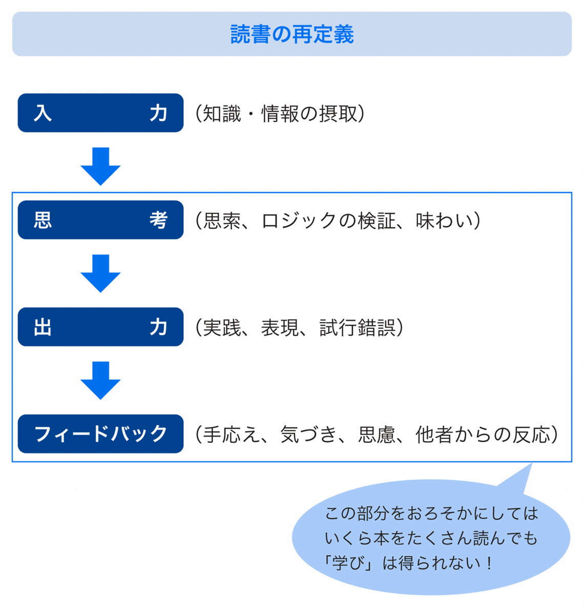

| ［速習！］フォーカス・リーディング講座 1冊10分で10倍の成果を出す超速読術 | |
| 寺田 昌嗣 | |
| (2015) | |
【速習！】フォーカス・リーディング講座
１冊10分で10倍の成果を出す超速読術
寺田昌嗣
はじめに
■ なぜ、速読が身につかないのか？
フォーカス・リーディング講座にようこそ！
講師を務めます、ＳＲＲ速読ラボの寺田です。
本書では、フォーカス・リーディングという、私が独自開発した速読メソッドを皆さんに身につけていただきます。
1980年代以降、たびたび「速読ブーム」らしきものが盛り上がります。
確かに、「速読の達人」なる人がテレビでやっているように、ポンポンと２～３秒ごとにページをめくって本を読んでいくようなことができれば、あっという間に何冊でも本が読めてしまいそうです。
仕事上、読まなくてはいけない本もあっという間に片付いてしまいますし、買ったまま家に「積ん読」状態になっている本もみるみる減っていくことでしょう。
しかし、ここで冷静に考えてみてください。
速読というものは、別に昨日や今日急に現れたものではありません。もうずいぶん前からあなたの周りに存在していたはずです。
正確には、速読教室が日本に登場して20余年、今では全国に500を超える速読教室が存在し、速読を採用している学習塾や学校、専門学校も多数あります。
それで、なのです。
あなたの周りに「速読」を活かして本を読んでいる人がどれだけいるでしょうか。おそらく、ほとんどの人が「そんな人、見たことがない」のではないでしょうか？
速読がこれだけの歴史を持ち、そこらじゅうに速読教室や速読本が溢れているにもかかわらず、速読を活用している人をほとんど見かけない。これはすなわち、「いくら学んでも、速読が身についていない」ということなのです。
実は、私の速読講座には「速読ジプシー」とも言うべき、速読教室を転々としてきた方が多数訪れます。そして、誰もが「やっと使える速読にめぐり会えた」と評価してくださいます。
そういった方々のクチコミもあり、私の講座は今では、「キャンセル待ち」が当たり前になっています。
■ フォーカス・リーディングの効果とは
では、本書で説くフォーカス・リーディングとこれまでの速読は、何が違うのか？
まず、速読の目標を誰もが達成できる、現実的なところにおいているという点です。具体的には、私の講座では目標を次のように設定しています。
・仕事で使いうる質を維持して２～４倍速（分速2000文字レベル）
・１冊10～20分の概要把握と記憶定着
もちろん、これでも十分以上な速さに感じる方も多いでしょう。ですが、このスピードは、これまでの1000人を超える指導経験、受講者のみなさんとの交流から「誰でも身につけることができるライン」だと断言できるのです。
もう一つの違いは、「徹底して実践的なトレーニングを積み上げること」です。
本書では「なぜ速読は可能なのか？」というような脳の可能性を根拠として、科学的にみせかける理論や理屈は一切ありません。ここにあるのは「どう体を使いこなすか」「どう理解と記憶を構築するか」という実践的、具体的なノウハウです。そして、それに基づいて徹底的に体で感じ、体で覚えるまでトレーニングを行う。これが私の講座の特徴なのです。
ひと言で言えば、「魔法のような、驚くようなメソッドではないけれど、誰でも確実に身につき、１冊の本を10分で読めるようになるメソッド」なのです。
■ 実体験に基づいた実績あるメソッドをあなたに！
かくいう私自身、実は「速読ジプシー」でした。高校２年生で速読に出会った私は、「１冊１分」あるいは「１ページ３秒」とうたう「パラパラとめくればすべて頭に入る、カッコイイ速読」を身につけるべく、４つの講座（教室、通信講座）を受け、ことごとく撃沈してきました。
もちろん、まったく成果なしではありません。「きざし」は手に入るのです。シューティングゲームのスコアは10倍になりました。漫画の単行本は２分で読めるようになりました。しかし、普通の本は読めません。無理して速く読んでも、せいぜい３倍速程度。しかも、読んだそばから忘れていきます。どうあがいても「１冊１分」など片鱗も見えません。
いつまでも目指す速読にならない。何かがおかしい。
そう考えた私は、自力で速読をマスターすべく、挑戦を開始しました。元々凝り性なもので、そのためのパソコンソフトまで作り、試行錯誤した結果、やっと納得のいく速読のメソッドを創り上げることができたのです。その間、７年の月日が経っていました。
その頃、教師だった私は、仕事の傍ら、そうして開発した速読メソッドとソフトを無料で公開し、無料の通信講座を開講しました。すると、徐々に「他の講座では身につかなかった」という人たちが集まり始めたのです。
私のメソッドはある意味、従来のやり方を全否定するものです。右脳だとか潜在意識だとか、はたまた１分間１万文字で一字一句理解・記憶だとかいう速読をことごとく否定してきました。また、速読業界の実情や裏側を暴露する話も公表してきました。そのため、脅迫状的なメールを受け取ったのも１度や２度ではありません。
しかし同時に、多くの速読インストラクターや教室経営者の方からも技術相談や顧問の依頼をいただきました。身分を隠して、こっそり受講しに来た方もおられました。教えている側もやはり、疑問を持ちながら速読の指導をしていたのです。
そうした経験を通じて、私の感じた疑問、挫折した体験、速読についての考え方が間違っていなかったとの確信を深めてきました。
この速読メソッドは、数年前に『フォーカス・リーディング』（PHP研究所）という名で書籍化し、おかげさまで10万部のベストセラーとなりました。
本書はこのメソッドをよりわかりやすく、実践的にしたものです。トレーニングはキャンセル待ちが当たり前の「３日間集中レッスン」の内容をほぼそのまま再現しています。
本書が、あなたの読書を充実させ、あなたの求める成長を加速させる一助になることを、心から願っています。
2011年１月
寺田昌嗣
※本電子書籍は、内容の特性上、横書き画面を推奨いたします。
［速習！］フォーカス・リーディング講座
Contents
第１講 フォーカス・リーディングで読書が変わる！
――本を読むことは「投資」である
――たくさん読めばいい、というワナ
――３つのワナを知っておく
――スピードと成果を両立させる！
第２講 フォーカス・リーディングの基本
――勉強のための読書？ 趣味の読書？
――本から得られるものは２種類ある
――本の内容を本当に血肉とするには？
――すべてを鍛えてこそ本当の力が得られる
――「読書経験値」がモノを言う
――トレーニングの注意点
第３講 体を極める①
集中力を手に入れる
――あなたの「集中力」がぐんとアップ
第４講 体を極める②
「眼」のコントロール力を極める
第５講 体を極める③
「視野」を広げていく
第６講 体を極める④
「入力レベル」を自在に操る
――「読める」と「読めない」の中間を意識する
――コツを徐々につかんでいく
第７講 技を極める①
早さと理解度のバランス感覚を極める
――読書は「ドライブ」と同じ
――「先行オーガナイザー」で快適な読書を
第８講 技を極める②
スキミングで必要な情報をすくうい上げる
――必要に応じた、自在な読書へ
――読書内容を記憶に定着させるために
第９講 読書技術を極める
――重ね読みのトレーニング
――読み方を忘れないために
――難しい本を読んでおけば、他の本が簡単に思える
――言葉の抜き書きだけでは意味がない！
――必要なものだけを捉えていく
――オーディオブックの活用法
――自分の人生を充実させるために
装丁◆赤谷直宣
イラスト◆須藤裕子
第１講
フォーカス・リーディングで
読書が変わる！
読書の価値とは？
――本を読むことは「投資」である
世の中がこれだけ変化し、明日が今日の延長とは限らない時代です。当然、私たちも常に変化し、進化し続けることが求められます。
――It is not the strongest of the species that survives, nor the most intelligent, but the most responsive to change.
最も強いモノでも、最も賢いモノでもない。
最も変化に適応できたものこそが生き残るのだ。
これはかのダーウィンが語ったとされる言葉です。
どんなに環境が変化しても、柔軟に、しなやかに対応できる力。時代を読み、その先を予測する力。時代に積極的に参加し、時代を創り出す力。荒波のような今の時代を勝ち残る上で、求められるのはそんな力です。
その力を磨く方法はいくらでもあります。仕事の現場で学ぶ、社内研修を受ける、セミナーに参加する......。ですが、その中でも最も効率がいいのは、やはり「読書」です。
ほんのわずかなお金で、何千年もの歴史に耐えてきた先人たちの英知や、独りで試行錯誤すれば何年もかかりそうな仕事上のノウハウを手に入れることができる――読書は、そんな価値ある営みなのです。
もちろんそんなことは、本書を手に取ってくれた人なら百も承知のことでしょう。そんな価値ある学びを広げたい、積み上げたいと思ったからこそ、あなたはこの本を手にしたはずです。
ならば、そこからもう一歩踏み出してみてください。「読書は投資である」と割り切ってしまうのです。
「今、この瞬間」を楽しむ読書もあっていい。知的な充足感を味わう読書ももちろんいい。ですが、そういう刹那の喜びを越えたところにこそ、「成長する喜び」はあります。
未来の喜びを手に入れる読書、投資としての読書は、今の読書を越えたところにあるのです。本書で紹介したい読書術は、まさにそんな「投資としての読書」です。
だから速読！
しかし......
――たくさん読めばいい、というワナ
「読書は投資」だからこそ、速読を身につけて、より多くの本を短時間で読みたいと考える人もいるでしょう。
しかし、あなたの周りを眺めてみて、どうでしょう？ 本をたくさん読むことで確実に成長しているといえる人は、どのくらいいるでしょうか。残念なことにどうも多くない気がします。
ひょっとすると「とにかく多くの本を読めば成長できる」と思い込んでいるのかもしれません。
再び、冷静に考えてみましょう。「読書は投資」が真実だったとしても、そもそも投資がリターンを生むかどうかは、「運用次第」ですよね？
ある企業にいくら投資したとしても、その企業の社員が手を抜き、価値ある仕事をしなければ、株価は下落する一方です。これは読書も同じ。一度読んだだけで何か新しい価値が生まれるなどということはまずありません。出力されてはじめて、読書は成果となるのです。
読書を「投資」としてリターンを生むものにするためには、とにかく速く、たくさんの本を読むだけでは意味はありません。そのことをまず、頭に入れておいてください。
ポイント
読書からリターンを得るには？
知識にせよ、技術にせよ、学んだことが「使える力」、つまり自分のものになるのは、入力された時ではない。
学んだことを使う場面で（出力しようとした時）、体験というフィードバックが得られ、思慮、反省し、新しいことに気づいた時、自分の中に発見と変化が生まれた時である。
あなたが陥りがちな
「読書のワナ」
――３つのワナを知っておく
本をひたすら読むだけでは、読書が成長に結びつかないどころか、もっと悲しい事態すら起こりえます。それは、「本を読めば読むほど、マイナス成長してしまう」ということです。
そんな３つのワナについて、ぜひ知っておいてください。
■ ①「頭を使わなくなる」ワナ
ひたすら多読を追い求める人の一番の問題、それは「自分の頭で考えることを忘れてしまう」ことです。「知る」ことで満足し、「考える」という作業を忘れてしまうのです。
最近の本は重要なポイントが強調されていたり、要点が章の最後にまとめられていたりと、至れり尽くせり。暗記至上主義の受験参考書を彷彿とさせます。
ですが、効率に目を向けすぎると、自分にとって予想外の概念やイメージしづらい話を、無意識に読み流してしまうなんてことも起こります。
そんな読書で得られるのはまさに「マイナス成長」。狭い視野と、粘り強い思考を拒否する安楽体質、使い道のないメタボな知識だけになってしまいます。
■ ②「多読が一冊の価値を奪う」ワナ
一冊の本を読み終えた達成感は、なかなか気持ちのいいものです。そんな充実感をもっと手に入れたくて速読を......と考えてしまうかもしれません。
ですが、こうした「本を読んだ」という満足感には要注意です。
あなたがあるハウツー書を読み、「これは使える！」という知識を得たとします。ですが、実際にそれを現場で使いこなせるレベルにならなければ、本当にその知識が身についたとは言えませんよね？
なのに、それを使うことなく次の本に手を伸ばし、知識のコレクターを目指す人がいます。定着する前に新しい知識を入れれば、古い知識はただ消え去るのみです。
■ ③「じっくり読めばいい」というワナ
本を一度さらっと読んだだけでわかった気になる――そんな読書スタイルは論外です。しかし、本はじっくり時間をかけて読んでこそ価値があると盲信しているとしたら、これまた同じくらい残念な発想です。
確かにじっくり読めば、言葉の持つ深みやレトリックを受け止めやすくなります。しかし、それで受け止められるのは「言葉」あるいは「文章」レベル。
「本」を読む作業は、言葉や文章を読む作業の延長線上にはありません。読書には様々な目的があり、それにふさわしい読み方をして初めて高い効果が得られるものです。
状況によっては「概要」を薄くつかむことに価値があります。逆に「さりげない一言」を深く掘り下げることで生まれる価値もあります。
非常に当たり前の話ですが、本の読み方などというものは、もっと自由であっていいし、むしろ目的や状況に応じて、自在にコントロールできたほうが価値ある読書が実現できるはずです。
フォーカス・リーディングの目指すところ
――スピードと成果を両立させる！
速く読む技術は貴重です。でも、効率を上げることで多くの本を繰り返し読めたとしても、それは「今までの価値の低い読書」を繰り返すことで、多少ましになったにすぎません。
「速さは、それだけでは何の成長にも結びつかない」
――この事実の克服は、私が速読の指導を開始した当初から抱えていた、１つの大きな課題でもありました。
速さを追求しつつ、読書から手に入れる価値を最大化するにはどうしたらいいのか......。その答えが「フォーカス」でした。
具体的には、
「読書から得たい成果を明確にして読む」
「ただ速く読むのではなく、速さを自在にコントロールする」
こと。ある意味、これは読書の達人が当たり前に実践していることです。
それを、誰でも実現できる技術として完成させたのが、私の提唱する「フォーカス・リーディング」です。
もちろん、このメソッドを身につけることで、読書スピードは格段に速くなります。しかも、質が落ちることなく、むしろ「普段よりもゆったり、質高く読んでいる感覚」が得られます。
そのスピードをローギアとし、さらにオーバートップまでのギアを作ることで、本書の目指す「１冊10分」を実現します。
ただし、速さを絶対視することはありません。あくまで「目的にフォーカスする」ために速さを使いこなします。速さというギアを使いこなす技術と、明確なフォーカス。この２つの要素が、あなたの読書の成果を10倍にも20倍にも高めてくれるのです。
ポイント
大事なのはスピードよりも「フォーカス」。
だが、必要な技術さえ身に付ければ
１冊10分も夢じゃない！
フォーカス・リーディングのメリット
さて、フォーカス・リーディングの技術を手に入れると、どんなメリットがあるのか。いくつか挙げてみましょう。
■ 「本を読む」ことの敷居が格段に低くなる
「本を１冊読み終えるのに５時間かかる」と思うと、なかなか本に手が伸びないもの。しかし、それが１冊１時間になったらどうでしょう？ さらに10分になったら？
そうなると、読書に感じていた「敷居」は格段に低くなり、読書がもっと身近に感じられるようになるはずです。
■ 同じ本を何度も読む「成功者の読書」ができる
多くの成功者が「本当に大切な本は、何度も読み返す」と語っています。これは実際、読書から成長を引き出す上で非常に重要なことです。
ただ、１回読み終えるのにも苦労する状態では、とても２度、３度は読めません。スピードを手に入れることで、この「達人の読書」に一歩、近づくことができます。
■ 効率のいい勉強法に
あるジャンルを学ぶ際、「類書を何冊も読む」のは非常に効果的な方法です。そのとき、個々の書籍の「違い」あるいは「共通項」にフォーカスして読むことができると、これまでとはまったく違う読書の価値が生まれます。
それは、１冊の書籍からは読み取れない価値、ただ類書を乱読するだけでは手に入らない価値なのです。
■ 多くの本の中から、本当に読むべき本を見つけられる
毎日、膨大な本が市場に出回っている昨今。その本が読むに値するものかどうか、価値があるとしたらどこに重点を置いて読めばいいのかを見分けるのはとても大変です。
フォーカス・リーディングの「ＴＰＯ発想」と「下読み」（第８講参照）のメソッドは、この労力を最小限に抑えてくれます。
このいずれも、「速さ」と「フォーカス」をセットで手に入れることで実現可能です。速さだけを手に入れても、結局、読書に充実感も成長も得られず、読書がつまらないものになってしまいます。 ぜひ、読書の価値を高める速さを手に入れましょう。
column
速読「都市伝説」１
音にしないのが速読である
速読を一度でも習ったことのある人、あるいは興味を持ったことのある人なら、速読にまつわるいろいろな噂を聞いたことがあると思います。たとえば、「頭の中で音読したら速読できない」「視野を広げれば広げるほど速く読める」など......。
しかしそれらの多くは実際にはありえない知識、いわば「都市伝説」なのです。実は私は、多くの同業者（速読指導者）から相談を受けてきましたが、彼ら指導者ですら、こうした「都市伝説」に惑わされているのです。
コラムでは、こうした速読に関する「都市伝説」とその真実を紹介していきます。
その代表格とも言えるのが「頭の中で音として読み上げないのが速読」という話。
確かに速読の達人の脳の活動を調べると、通常読書で使われる左脳聴覚野の音声処理が省略されています。その事実もこの都市伝説をもっともらしく感じさせます。
しかしそれは「達人の領域」であり「結果論」に過ぎません。最初からそれを目指すべき、あるいはそれができなければ速読ができないと考えるのは完全な間違いです。
バスケットボールの一流選手は、「ノールックパス（相手のほうを見ずに出すパス）」を華麗に決めてみせます。ですが、彼らが最初からノールックパスの練習をしていたわけではありません。地道な練習を積み上げてきた結果、そうした達人芸が身についたのです。それは読書・速読も同じこと。
読書の達人を除けば、普通、頭の中で音声化しなければ理解できません。そして、１分あたり4000～6000文字（10ページ前後）までは頭の中で音にする感覚は残るものです。音声化はスピードを上げる障害にはなりません。
そして読書力が上がるに従って、自然と「音に頼らない読書」に切り替わっていくものです。
妙な都市伝説に惑わされず、まっとうな読書、速読トレーニングに取り組みましょう。
第２講
フォーカス・リーディングで
の基本
「その読書の方向性」を考える
――勉強のための読書？ 趣味の読書？
さて、ここからいよいよ「フォーカス・リーディング」をマスターすべく学んでいただきます。
ここでまず、そもそも「読書」はあなたにとってどんな意味があるのか考えてみてください。
「速さ」にせよ、「フォーカス」にせよ、読書の価値を高めるためのオプションです。「あなたにとっての読書とは？」ということが明確になっていないと意味がありません。
読書には大きく分けて２つの方向性があります。
一つは「今」を楽しむための読書。明日の活力を得るにせよ、くつろいだ時間を過ごすにせよ、「今、この読書」を楽しむというスタンスです。趣味の読書と言ってもいいでしょう。
この場合、そのコンテンツを楽しむことそのものにフォーカスします。スピードで楽しみが損なわれるようでは意味がありません。限られた時間で、最大限の喜びを手にできる読み方を目指すわけです。
もう一つは、「未来」に備える読書。「今」という時間を投資して、未来の喜び、安心感を手に入れるわけです。いわば「勉強のための読書」です。
この場合、リソースである「時間」をコントロールし、リターンを最大化できるように使わなければなりません。ここでの読書の目的は、「手に入れたいリターン」に向けられます。
さて、あなたが今から読もうと思っている本。その読書は、どちらの方向性を持ったものでしょうか？ それを明確にしないと、フォーカスもスピードも、的外れな使い方になってしまいかねません。
ポイント
本を読む前に、「この本は何のために読むのか」と考えるクセをつけよう。
「その読書から得たいリターン」にフォーカス
――本から得られるものは２種類ある
「今」を楽しむ読書のフォーカスは「コンテンツそのもの」に向かいます。楽しみたいように読めばいいわけです。
しかし、「未来」への投資としての読書は、本一冊一冊に明確なフォーカスが必要です。つまり、その読書から「手に入れたいリターンは何か」を考えなければなりません。
勘違いしがちですが、これは本の種類によって決まるものではありません。「自分がその本に何を求めるのか」というあなたの目的意識によって決まるものなのです。
学び、投資としての読書は、得られるリターンから大きく２種類に区別できます。
A.狩猟採取型
必要な知識や情報を「仕入れる」ための読書。視点やノウハウ、データといった、あなた自身の思考や行動をサポートする情報を得ることが目的となります。
テクニック集やハウツー書などは、このパターンが多いでしょう。
B.農耕型
自分の知性や常識の限界を超えたものを読み解くことに価値を置き、短期的な成果を求めるものではありません。名著や古典、あるいは文学作品などは、このパターンが多いでしょう。
ポイント
その本から得られるリターンはあなたが決めること！
本の内容で決まるものではない。
読書を再定義してみよう
――本の内容を本当に血肉とするには？
あなたがその本を読んで得たいものは何なのか。そしてそれは、テクニックやハウツーといった「狩猟採取型」のリターンなのか、あるいは長期的に自分にとって役立つものとするための「農耕型」のリターンなのか――ここまで読書の目的にフォーカスすることができれば、実はそれだけで読書の効果も、スピードも上がります。
ここで見ていただきたいのが、次の図です。
「思考」のプロセスを読みながら行うのか（農耕型）、次の「出力」のプロセスとセットで行うのか（狩猟採取型）は別として、読書で得た内容を本当に自分のものとするためには、ただ読むだけではなく、このようなプロセスを経なければなりません。
まず、本を読んで得た知識をしっかりと自分の中で噛み砕き、さらにそれを出力します。ここでいう出力とは、人に話す、文章化して表現する、あるいは仕事で実践してみるといった作業です。
さらにそれについて相手のフィードバックをもらったり、失敗にせよ成功にせよ自分なりの体験を手に入れたりします。
ここまでやってこそ、学びとしての読書が完成するのです。

ポイント
知識はただ得るだけでなく「出力」しなければ意味がない。
フォーカス・リーディングで入力の時間をカットできたら、その分、出力、フィードバックに投入しよう。
読書の心技体
――すべてを鍛えてこそ本当の力が得られる
さて、フォーカス・リーディングを身につけるにあたって、もう一つ大前提があります。それが、「心技体」の３つの要素を鍛える、という視点です。
まずは「心」。これは、何のためにこの本を読むのか、どう読むのかといったことで、これはここまでお話ししてきたことです。これがあれば、本を読む姿勢に一本、しっかりとした筋が通ります。
そして「技」は、実際の速読のメソッドになります。
さらに、「体」。これはベースとなる読書力、あるいはどうやって集中するかといった、本を読む前提となる力です。
本書ではこれから、この「体」と「技」の鍛え方について、実践的かつわかりやすく説明していきたいと思います。
「心技体」は、よく武道やスポーツで聞く言葉です。そう、読書もまたそういったスタンスで、それ自体を楽しみ、その技を磨きながら大きな目標に向かっていくのです。
ポイント
読書をスポーツだと捉えよう！
心技体を磨けば、必ず結果はついてくる。
速読術に必要な
２つの要素
――「読書経験値」がモノを言う
速読術は大きく言えば２つの要素から成り立っています。
A.情報を処理するベースとなるスキーマ
B.情報処理能力を最大に引き出すための体の使い方
Ａはあなたのこれまでの読書経験値です。したがって一朝一夕に高められるものではありません。もし読書量が少ない自信がある人は、速読トレーニングと並行して、それを補う取り組みを行ってください（第９講参照）。
本書でこれから行うトレーニングは、Ｂがターゲットです。これまで無意識に行っていたことを意識的にコントロールできるようにし、あなたの持っているＡの潜在力を最大限に引き出します。
では、何のコントロール力を鍛えればいいのか？ それは「眼」「意識」「フォーカス」の３つです。
この３つのコントロール力をバランスよく鍛えることができれば、本を読むスピードも、そこから得られるリターンも、最大のものになるのです。
ポイント
読書による情報処理能力を最大限に高めるためには、「眼」「意識」「フォーカス」の３つのコントロール力を鍛えることが大事！
体育会系メソッドで
速読を身につけよう！
――トレーニングの注意点
さて、いよいよ次の章から実際に速読トレーニングに取り組んでいきます。磨くターゲットは、先に紹介した３つのコントロール力です。プログラムの構成、取り組みは基本的にスポーツや楽器の練習と同じ方法論で組み立てられています。
1.丁寧に基本を確かめ、正しい体の使い方をする練習
2.実践的な動作の中で全体の完成度、流れのよさを高めていく練習
の２系統のトレーニングです。
たとえば楽器なら、運指、ピッチ（音程）を確認しながら丁寧に音を出す訓練をした後、メトロノームに合わせてリズムよく弾く練習などをし、いよいよ曲（伴奏）に合わせて弾いてみた上で、コンサート本番に向かいます。あるいはバスケットボールなら、腕の角度、体の使い方などを確認しながら丁寧に訓練した後、ランニングシュート練習、フォーメーション練習を行い、試合に臨みます。
本書でのトレーニングもそれと同じです。最初は丁寧に、できれば毎日１プログラムずつこなしていき、体の使い方を覚えていきます。ただし「とりあえずこなす」のではなく、成果を確認し、確実に向上していくことが大事です。そしてその後、徐々に実際の読書において完成度を上げていきます。
実践的な動作のトレーニングでは負荷を上げ下げします。負荷が高い時は「今のやり方を超える試行錯誤」が求められます。逆に負荷が下がって余裕が生まれた時は、気を抜かず、生まれた余裕で姿勢や体の感覚に繊細に心を配り修正作業をします。
では、トレーニングに取り組む上での心構えを説明します。
■ 1.プロセスにフォーカスしよう
「よくわからないけどできた」では意味がありません。自分の内側の何をどうしたら新たな変化が生まれたのか、しっかり受けとめながら取り組んでください。「できた」「できなかった」という価値判断は不要です。そもそも微妙な感覚は、「できているかどうかよくわからない」場合が多いもの。自分の現状を冷静に感じ取り、新しい感覚を探り続けましょう。
■ 2.まな板にのろう
途中、かなり無茶とも思える負荷が設定されています。しかし、このトレーニングは、それを乗り越えることで新しい世界が見えてくるようになっています。まずはまな板にのった気分で、与えられた課題を一つ一つ丁寧にこなしていってください。
■ 3.ベクトルの半分は常に自分に向けよう
速読トレーニングはスポーツと違い、外から見て体の使い方の良し悪しがわかりません。つまり、レッスンを受けるにしろ一人でトレーニングするにしろ、結局頼りになるのは自分だけです。
我を忘れて必死にならず、常にクールに自分を観察し、自分と対話してください。
■ 4.ステージを上げていこう
成長というのは努力と比例して現れてくるものではありません。停滞と飛躍を繰り返しながら、前に進んでいくものです。
壁にぶつかったら、それはやり方を変えるチャンスです。がんばってレベルを上げるのではなく、大胆にやり方をシフトすることが求められています。
■ 5.「できる」を確信し、「できた」をイメージする
「できるできる！」と、強がってポジティブシンキングをしても、あまり意味はありません。光がまったく見えてこなくても、「今」を変える取り組み、自分と対話する取り組みを淡々とこなしていきましょう。その蓄積が、ある日突然「ブレークスルー」をもたらしてくれるのです！
Step/Dayについて
各講の扉および項目の横についている「Step/Day」とは、この順番でトレーニングを進めていくとより効率的に身につくという目安です。これを１日１つずつこなしていけば、30日ですべて終わるというわけです。
一度に数ステップ分進めてしまってもいいのですが、その場合は繰り返しになる基本３種トレーニングは省略しても構いません。
・トレーニングでの負荷のかけ方
○トレーニングの前に、必ず上虚下実、目前心後を作り、呼吸を整えた上で、自分の中に鎮まりを感じる。
○体の使い方を覚えるためのトレーニングは、基本的に10分以上継続して行う。
○限界を突破するためのトレーニングは、「もう限界！」と思うところから、さらに3割程度負荷を上げて「新しいステージ」を模索する。
○体の安定した使い方を模索する場合には、同じペースである程度継続し、その中で試行錯誤する。
○スピードチェックは結果論で終わらせず、設定された目標ペースを確実に達成した上で、質をどこまで高められるか模索する。
○しっかりとトレーニングすることは大事ですが、適度な休憩も必要です。また、気分が悪くなったり、極度の眼の疲労を感じたときはすぐに中止してください。また、コンタクトの方は外してメガネをご使用ください。
column
速読「都市伝説」２
視野を広げれば速く読める
この話は、「読書のレベルが高い人は広い視野で読んでいる」というアメリカでの調査結果から生まれたものです。
たしかに、読書に慣れた人は一度に処理できる情報量が多いため、視野を広く保って読むことができます。
そして速読教材を見ると「ブロック読み」などと表現される読み方が推奨されていることがあります。「○文字単位読み」とか「１行○分割読み」といったようなパターンです。
しかし、本来視野の広さは「意識の理解にちょうどいい広さ」に、無意識レベルで自動調整されています。つまりそれが「ひとかたまりで理解するのに適切な情報量」なのです。
ですから、視野の広さを無理に広げて、文字が眼に映ったとしても、処理することはできません。もちろん視野を広げなければ速く読めるようになりませんが、そのためには何冊も本を読み自分の経験値を上げ、言葉のデータベースを増やしていくほかないのです。
ここで注意すべきは、むしろ逆に、「読もう」という意識が強くなりすぎると、かえって視野は狭くなってしまうということです。無理して視野を広げようとするのではなく、逆にがんばって「読むぞ！」と力むこともない状態こそが、理想なのです。
視野の広さは、その人の情報処理能力（スキーマ）と、もう一つ「読む意識の強さ」で決まります。これを「入力レベル」と呼びます。
第３講
体を極める①
集中力を手に入れる
基本トレーニング① Step/Day 1
実は読書の質は
「姿勢」で決まる！
――理想の「本の読み方」とは？
では、いよいよトレーニングを開始します。
さて、読書の質を高める大きな鍵を握るのが「集中力」です。
しかし、私たちは「集中する＝がんばる」という癖をつけてしまっており、正しい集中の仕方を知りません。
理想の状態は心も体も適度に脱力しながら、意識は冴え、対象に鋭く心が向いている状態です。テニスで相手のサーブを受ける直前の静けさ、オーケストラで指揮者がタクトを振り下ろす直前の静まりにたとえることができます。
この適度にリラックスしつつも、研ぎ澄まされた高い集中力を発揮している状態を「弛緩集中状態（速読モード）」と呼びます。
理想とするのは「上虚下実」、つまり上半身は適度にリラックスしつつ、下半身には無理のない程度にしっかり力が入っている状態です。さらに呼吸を整え、体の内側で呼吸（空気の流れ）を感じながら無心になることで脳の活動状態が変わります。これを脳の「ステートチェンジ」と呼びます。
そのための「姿勢の作り方」と「呼吸の仕方」を、以下、解説していきましょう。そしてこれらを理解した上で、今の自分の読書の質とスピードを３分ほどかけて確認してみましょう。
■ 正しい姿勢
まずは、「正しい姿勢」を整えます。
「本を読むのに姿勢を正さねばならないのか？」と考える人は、速読がスポーツだということを忘れています。
さて、実は読書に最もいい姿勢は何かといえば「立つ」です。前述した「上虚下実」が最も実現しやすい姿勢といえます。書店での立ち読みの際、なぜか集中できるという人もいるかと思いますが、このためなのです。
これを座った状態で一番実現しやすいのは、「正座」なのですが、椅子中心の生活を送る現代人には、ちょっと現実的ではないでしょう。ということで、椅子での理想的な座り方は、以下のようになります。
■ 正しい本・フォームの保持（目前心後）
次に、本の正しい持ち方です。
まず、後頭部付近を軽くさわり、そこに意識を残しながら、後ろから見ている感覚をイメージします。能でいうところの「目前心後」、自分のすぐ後ろにもう一人の自分が立っているような状態です。その上で、次のイラストのように眼の高さと本の高さを合わせ、肘を机につかずに読むというのが、正しい本の読み方です。
ただし、この姿勢を長く続けるのは疲れるので、腕を下ろして肘から先を机につけ、軽く見下ろすような姿勢にしたり、あるいは眼の高さと本の高さは合わせたまま、肘をつくという姿勢を時々取ってもいいでしょう。
■ 理想的な呼吸
これも武道の世界と共通しますが、吸う・吐く作業をコントロールすることで、集中力を格段に高めることができます。具体的には「丹田呼吸」を意識してみましょう。
1.おへその下10センチ程度のところの「臍下丹田」と呼ばれる部分で呼吸するように
2.空気の流れを感じながら、吸う息、吐く息をコントロールする
特に吐くペースをゆっくりコントロールし、その空気の流れを体の奥、鼻の奥で感じてください。
ポイント
姿勢、本の持ち方、呼吸を整えると、体の中に「鎮まり」を感じることができる。
基本トレーニング② Step/Day 2、3
「一点集中トレーニング」でしっかりものを見る
――目指すのは「武道家の眼」
姿勢を整えたら、次に集中するための「眼」の整え方に移りましょう。
私たちは普段、両眼の焦点、視点を合わさずに見るなど、意外と雑なものの見方をしているものです。
逆にしっかりと見ようとすると、眼に無駄な力を入れてしまいがちです。実際には眉間にしわを寄せ力んだところで、よく見えたり、読書の理解度が高まったりすることはありません。むしろストレスで処理の質が下がるのが関の山です。
速読に必要な眼というのは、決して力まず、それでいて集中している状態のもの。いわば武道家の眼といってもいいでしょう。
そこで読書の質を高める第一歩として、ムダに力を入れることなく、両眼を正しく使って対象を捉えるトレーニングを行います。視点を「集中力の乗った点」にすることを目指します。
これができると、自分でも驚くほどの「集中状態」に入れるはずです。
次のフォームを使って、実際にやってみましょう。
用意するもの
・タイマー
取り組み方
1.姿勢を整え、３回深呼吸（腹式呼吸）をしてください。
2.眼の高さに●がくるようにフォームを保持します。
3.呼吸をコントロールしながら、１分間●を見つめます。
4.１分経ったら軽く眼を閉じ、残像を見つめます。残像が消えたら眼を開けましょう。これを3セット行います。
チェックポイント
・呼吸が浅くならないようにコントロールできましたか？
・上虚下実、目前心後は意識し続けられましたか？
・●の周りに白い光が安定して見えましたか？
・残像は見えましたか？
※残像を眺めることで脳を高い集中状態（fmθ波の状態）に導くことができます。慣れるまで残像が見えない場合もありますが、●を見ていた場所に残像が見えるとイメージしてみてください。
基本トレーニング③ Step/Day 2、3
集中力スムーズ
移動トレーニング
――集中したまま視点を動かす
一点集中トレーニングによって、「見る」基本を体験しました。
一点を見つめるだけでも、こんなに大変なのか......と感じたかもしれません。そして同時に、ものをしっかり見ている時の眼の感覚にも、おぼろげながら気づけたのではないでしょうか。
さて、その状態のまま、続いて視点をコントロールする練習をしていきます。視点をコントロールし、フォーカスを向けた対象を的確かつ高速に見ていくためのトレーニングです。
「眼を動かそう」と、少しでも意識してしまうと、これまでどおりおおざっぱな動きになってしまいます。眼を動かすのではなく、紙の上で集中力の乗った視点が移動していくイメージを描くようにしましょう。
前回と同じ「集中フォーム」を使って行うトレーニングです。
使用する教材・ツール
・タイマー
取り組み方
1.姿勢を整えフォームを保持したら、３回深呼吸（腹式呼吸）をしてください。
2.視点を右上のスタート位置の★に乗せます。
3.頭の中でカウントしながら、10秒かけて次の▼まで視点を移動させていきます。小さな●は５秒ごとの通過点です。途中の●や▼に視点を停止させる必要はありません。
4.左下の★にたどり着いたら終了です（約２分）。これを３セット行います。
チェックポイント
・呼吸が浅くならないようにコントロールできましたか？
・上虚下実、目前心後は意識し続けられましたか？
・視点を線の上にイメージすることができましたか？
・自分の意識、眼の状態を観察することができましたか？
基本トレーニング④ Step/Day 2、3
集中追跡トレーニング
――一文字一文字を捉えていく
先ほどは線をなぞる作業でしたが、今度は文字を一文字一文字丁寧に捉えていきましょう。
文字を視点で捉えると、自動的に頭の中で「音」になります。これは反射ですので気にする必要はありません。しかし、積極的に頭の中で文字を読み上げて、視点を誘導してはいけません。あくまで主導権は「見る」ことにあります。
慣れないうちは一文字ずつ視点で捉えていく「緻密さ」を大事にしてください。徐々に「なめらかさ」を作っていきますが、「急ぐ」のとは違います。急ぐと、どうしても視野が狭くなり、視点が飛び飛びに動いてしまいます。
これまで同様、「紙の上に視点をイメージする」ことを大事にしてください。
トレーニング方法は次に、トレーニングに使うフォームはその次にあります。
使用する教材・ツール
・タイマー
取り組み方
1.姿勢を整えフォームを保持したら、３回深呼吸（腹式呼吸）をしてください。
2.視点をステージ１右上先頭の文字「ぬ」に乗せ、以下、順に丁寧に文字を見ていきます。視野を絞り込まず、数文字先まで意識に入れておき、「次の文字へ、次の文字へと視点が吸い寄せられる」ようなイメージを作るといいでしょう。
3.ステージ２、３では「文字の上を視点がスムーズに通過していく」イメージを作ります。文字が小さくなるとストレスがかかり視野が狭くなりがちです。努めてリラックスし、視野をゆるめるように心がけましょう。
4.ステージ１からステージ３までを、３分間繰り返します。これを３セット行います。
ポイント
行頭・行末の文字は、気を抜くと雑に処理してしまうので最初の一文字から最後の一文字まで丁寧に捉える。
「基本３種トレーニング」は毎日続けよう
――あなたの「集中力」がぐんとアップ
ここまでの３つのトレーニングを「基本３種トレーニング」と呼びます。これを毎日続けると、本を読むにあたっての集中力が違ってきます。これからご説明する他のトレーニングをする前に、できればいつもこのトレーニングをしてください。ウォーミングアップのようなものです。
ただ、慣れないと視点は簡単には動いてくれないでしょう。
動かそうという意識を持たずイメージで、というのは言葉として理解できても、最初はなかなかなじめないものです。
これを克服するコツとして、私のレッスンを受けた方の「克服のコツ」を一部、ご紹介します。
・文字を見るのではなく、文字の周囲の行間部分に意識を向け、文字を包み込む白い光をイメージし、それを移動させる。
・文字の印刷されたテープがペリペリとはがれていくイメージ。
・視点が下にいくに従って眼の力を抜き、意識を後ろに引くようなイメージ。
これらを参考に、ぜひ続けてみてください！
column
速読「都市伝説」３
眼を速く動かせば速く読める
これも「視野を広げる」とともによく語られる誤解の一つです。結論から言ってしまえば、レベルの高い読書家の眼の動きは速いというだけの話。ですが、中には「動体視力」などを持ち出して、さも科学的根拠があるように語る人もいます。
実は、読書の中で「眼が動いている時間」は、全体の１割にすぎません。通常、文章から情報を読み取る際、0.3秒かけて読み取り、0.03秒程度で視野が移動していくのです。
この0.03秒の移動時間を短縮してもほとんど意味はありません。眼を速く動かすことで短縮されているのは、むしろ「読み取る時間」のほうなのです。
また、移動にかかる0.03秒を含めて0.08秒程度、眼から意識に情報が送られていないことも科学的な実験で明らかになっています。
するとどうなるか？ 図で示しているように、眼を高速に動かせば動かすほど、理解の時間はゼロに近づき「見えども読めず」になります。この状態を「言語明瞭意味不明」状態と呼びます。
単に眼だけを速く動かしても意味がないどころか、逆効果になることもあるのです。ご注意ください。
第４講
体を極める②
「眼」のコントロール力を
極める
Step/Day 4. 流れをイメージしよう
1.基本３種トレーニング
Step/Day 5. 視野を広げよう
1.基本３種トレーニング
Step/Day 6、7. 行にフォーカスしよう
コントロール力トレーニング① Step/Day 4
スムーズ追跡
トレーニング
――まずは「行」を見渡せるようにする
では、さらに「スムーズに見ていく」トレーニングを続けていきましょう。
これまでは、意識を「文字」に向けていました。これを今度は「行」に向け、「行を上から下に見渡していく」イメージを作ります。視野は広く保っておきましょう。
このトレーニングには、リズムよく音を刻むものが必要となります。メトロノームをお持ちの方はそれを使ってもよいでしょう。
その音に合わせて強制的に流れとリズムを作り、その中で自分の眼の動き、視点・視野の流れや状態に気づき、チューニングしていきます。
トレーニングのやり方は次に、使用するフォームはその次にあります。本書はヨコ書きですが、トレーニングはより一般的なタテ書きの本を想定して行いますので、トレーニングはスムーズ追跡フォームからスタートしてください。
ちなみにタテ書きのトレーニングをすることで、ヨコ書きの本を読む力もちゃんと高まります。詳細はコラムをお読みください。
使用する教材・ツール
取り組み方
1.姿勢と呼吸を整えます。
2.メトロノームを使ってペースをナビゲートしながら、以下のペースで10分程度連続して行を上から下へ見渡していきます。
3.最後に１分間で15行のペースでなめらかに見ていけるかチェックします（５セット）。
チェックポイント
・集中追跡と同じく、紙の上にイメージを描きましょう。
・文字を見ようとせず、各行を１本の縦長の模様だと思って、上から下に見渡していく気持ちで眺めていきましょう。
・ひらがなやロシア文字、ギリシア文字の行はスムーズにいくのに、漢字の行はスピードが落ちるようなら、それはフォーカスが「行」ではなく「文字」に向いている証拠。

コントロール力トレーニング② Step/Day 5、6、7
視野をさらに広げる
――より見える範囲を拡大していこう
スムーズ追跡のなめらかさを徐々に高めていきます。追跡のなめらかさとスピードを上げるには視野を広げる必要があります。
「視野を広げる」と言葉でいうと簡単そうですが、視野を広げようとがんばってしまうと、眼に力が入り、逆に視野が狭くなり眼の動きがぎこちなくなります。
かといって視野を広げるためにリラックスを意識すると、今度は行頭・行末の見方が雑になっていきます。
リラックスして視野を自然に広げつつ、行頭・行末を明瞭に捉え、スピードに乗っていく鋭い集中力を作るわけです。この「リラックスと集中のバランス感覚」こそ、本書で目指す弛緩集中の一つの形でもあるのです。
最初は１分間で15行でしたが（Step/Day 4）、それを１分間で30行（Step/Day 5）に、さらに１分間で60行（Step/Day 6、7）へと増やしていきます。
スムーズ追跡にはいくつかのステージがありますが、がんばった分、直線的にレベルが上がるのではなく、飛躍によって次のステージに上っていきます。もし壁を感じたら「見方（フォーカス・視野の使い方）が違う」と判断してください。ステージを変えるサインです（ステップアップのイメージ図参照）。
前回と同じフォームを使用して行うトレーニングです。
使用する教材・ツール
取り組み方
1.姿勢と呼吸を整えます。
2.メトロノームを使って以下のようにペースを設定（Step/Day 5）。
3.最後に１分間で30行のペースでなめらかに見ていけるかチェックします（５セット）。
4.その後さらに以下のペースで「１分間60行」へと目標を上げていきます（Step/Day 6、7）。
チェックポイント
・トレーニングの最中、焦ったり、がんばって無我夢中になっていませんでしたか？ 常に目前心後のクールさを忘れないでいきましょう！
・設定ペースが上がれば上がるほど焦りが生まれ、その焦りが視野を狭くします。常にリラックスし、上虚下実＋目前心後を忘れないようにしてください。
コントロール力トレーニング③ Step/Day 6、7
ページ見渡しトレーニング
――視野の広さを確かめよう
スムーズ追跡のステージを上げていくには「視野の広がり」をコントロールする力が必要になります。
しかし、コントロールするには、そもそも視野の広がりを明確に意識できていなければなりません。あなたは、自分の眼に映っているものが、「なんとなく見えている」のか「明瞭に見えている」のか、あるいは「意識で捉えられている」のか認識しているでしょうか？
Day6、7でスムーズ追跡トレーニングをした後は、「視野の広がりを意識する」ための「ページ見渡し」トレーニングをしていきます。無意識の作業はコントロールできませんが、いったん意識できると、それはコントロールの対象になるのです。
今度のトレーニングは、手近にある実際の書籍を使って行っていきます。次の図のようなイメージで、時々本を逆さにひっくり返したりもしながら、ページを眺めていくのです。そうすることで、自分の視野の広がりを意識して確認してみましょう。
使用する教材・ツール
・適当な縦書き書籍（新書など）
・メトロノーム
取り組み方
1.姿勢と呼吸を整えます。
2.以下のようなペース設定でページを眺めていきます。視野は１行の３／４ぐらいの縦長の領域をイメージし、スキャナーやコピー機の光で文字を写し取るようなイメージで、縦長の視野を右から左へ流していきます（スキャン）。ページをめくりつつ、どの領域まで明瞭に見えているのか確認してみましょう。
チェックポイント
・自分の視野の広がり、移動の軌跡はしっかりと意識できましたか？
・ペースが上がっても、リラックスして、ゆったりと呼吸しながら取り組めましたか？
column
速読「都市伝説」４
高速道路の効果で速く読める
実は、短期間の速読講座などで使われる、手軽に速読を擬似体験できる方法があります。文章を読まずに行頭と行末だけを高速に見たり、パソコンの画面に高速に表示される文字を眺めたりすることで、ある一定の時間、読書スピードが２～４倍に上がるのです。いわば、高速道路を下りた直後、料金所までの道で知らず知らずのうちにスピードを出してしまっている、あの感覚です。
ですが、これも運転をしたことがある人ならおわかりのとおり、この効果は料金所をすぎると消えてしまいます。そして、一度消えると、その感覚を意識的に再現することはできません。高速道路を何百回走っても、その感覚を定着させることはできないのです。
この「速読の擬似体験」もそれとまったく同じ。短期間の講座で得られたスピードは、教室を出たとたん、すぐに消えてなくなってしまいます。
もっとも、感覚を狂わせることで生まれた心の余裕を活かして、自分の視野や読み方をコントロールする練習をするなら、ある程度の効果はあります。「速く読めた」で満足して終わるのではなく、その速く読めている状態それ自体をトレーニングにするのです。
これはスポーツの練習では当たり前に使われる手法です。高い負荷をかけた後に、正しいフォームなどをチェックしながら定着させようというわけです。
第５講
体を極める③
「視野」を広げていく
Step/Day 8. 視野の広がりに気づこう（アイボール）
1.基本３種トレーニング 2.ページ見渡し 3.アイボール
Step/Day 9. 視野の広がりを活かそう①
1.基本３種トレーニング 2.ページ見渡し 3.アイボール 4.スムーズ追跡（１分100行まで）
Step/Day 10、11. 視野の広がりを活かそう②
1.基本３種トレーニング 2.ページ見渡し 3.アイボール 4.スムーズ追跡（１分120行まで）
Step/Day 12. 視野を広く保とう①
1.基本３種トレーニング 2.ページ見渡し 3.スムーズ追跡（高速追跡、フォームA）
Step/Day 13. 視野を広く保とう②
1.基本３種トレーニング 2.ページ見渡し 3.スムーズ追跡（高速追跡、フォームB）
視野トレーニング① Step/Day 8
「アイボール」で、イメージどおりに眼を動かす
――自在に見る眼を手に入れる
さらに眼のコントロール力を高めていきますが、ここからは「視点」よりもむしろ「視野の広がり」と「広がった視野の中で対象を明瞭に捉える」ことを重視していきます。
目指すのは、「眼を動かす」という意識を完全に排除し、紙の上に描いたイメージどおりに眼をコントロールすることです。
最終的には、あなたが手に入れたいポイント（フォーカス）と、理解度のレベルを設定したら、それを眼が完全自動で実現してくれる状態を完成させます。
ここで新たに取り組む「アイボール」も、一見すると「眼を高速に動かす」トレーニングに思えます。しかし、実際には視点を力みなく、正確に移動させることが重要です。
次のフォームを使ってください。
使用する教材・ツール
・タイマー
取り組み方
1.姿勢と呼吸を整えます。
2.フォームの①から順番に、リズムよく視点で捉えていきます。ただし、線はあくまで動きの軌跡を示しているにすぎず、この線をなぞるように見る必要はありません。
3.１周見終わるごとに、少しずつスピードを上げて見ていきましょう。ただし、雑にならないように注意してください。
4.１分経ったら終了です。これをフォームをタテ、ヨコに向きを変えて、それぞれ２セット行います。
ポイント
スポーツや音楽の練習で、動きが悪い部位を上手に使えるようにするために、まったく異なる種類（ジャンル）のメニューを採用することがある。新しい動作で体を使ってみることで、新しい感覚を手に入れようというわけで、このアイボールも同じ効果を期待して採用している。
視野トレーニング② Step/Day 9、10、11
高速に見るトレーニング
――流れに乗って壁を突破しよう
ここまでのスムーズ追跡は、ソフトやメトロノームの音に合わせて１行ずつ、行末まで「きっちり見る」感覚が強かったのではないでしょうか。
ここからは、広がった視野で文字を捉える感覚を意図的に作っていきます。具体的にはソフトやメトロノーム１拍の音に合わせて２～３行を高速に見ていくトレーニングをしていきます。
最初は１分間で100行をリズムよく見ていけるかチェックします。
それができるようになったら、次は１分間で120行です。これが、前半最大の山場！最初は非常に越えがたい壁に思えるはずです。
しっかりと鎮まったリラックス、それによって実現される広い視野。そして、鋭く１行に切り込む高い集中力。この両者のバランスを絶妙にとっていかなければなりません。
スピードを上げる時、限界を突破していく時に重要なのは、がんばることではなく、とことん鎮まり、適切なイメージを描くことです！
このトレーニングは、前にも使ったスムーズ追跡フォームを使います。
使用する教材・ツール
取り組み方
1.まず３分間、自由なペースでスムーズ追跡を行います。スピードを意識的に上下させながら様々な見方を試し、コントロールする感覚を磨いてください。
2.続いてメトロノームを使ってトレーニングします。
・１拍のリズムで２行ずつ見ていきます。
・１拍で３行ずつ見ていきます。
3.最後に、ここまでの見方を活かすつもりで３分間、自分でペースを作りながらスピードの限界に挑戦してみましょう。
4.１分間で100行をリズムよく見ていけるかチェックします（Step/Day 9）。
それができるようになったら、次は１分間120行に挑戦します（Step/Day 10、11）。
チェックポイント
・スピードを上げても眼の力みはとっていく、眼の動きはどんどん小さくなっていく、ということを意識してください。
・ただこなすだけでなく、眼の使い方の感覚をつかんでください。
視野トレーニング③ Step/Day 12、13
眼のコントロール、
いよいよ仕上げ
――広い視野を意識する
ここまで眼のトレーニングをすることで、だいぶ速読のイメージができてきたかと思います。いよいよ文字を読みたくなりますが、あとちょっとだけお待ち下さい。眼をコントロールするトレーニングの仕上げに、「広い視野で行を包み込み、その中で意識だけが１行ずつ超高速に追跡していく」イメージを作ります。フォーカスは「行」を離れ「面（の中の流れ）」に向かいます。
「広い視野で行を包み込む」イメージを手に入れるために、Step/Day12では１行の文字数が少ない「高速追跡フォームＡ」を使います。これは行の文字数が少ない代わりに、意味のある文章が書かれています。そのため、無意識に意味を取ろうとしてしまうことがあります。もし、長い行と短い行でリズムの乱れを感じたら、意味を読み取ろうとして視野が狭くなっている証拠です。
「広い視野の中で意識だけで追跡する」イメージができると、眼を動かしている感覚はほとんどなくなります。傍から見ると、眼が機械的に、小さく上下運動をしている状態になっています。
Step/Day13では文字の増えた「高速追跡フォームＢ」を使います。増えた分を視野の広がりでカバーできるよう、いっそう鎮まりを大事にしてください。どうしても視野に収まりきらないなら、フォームを傾けて見かけ上の幅を狭くしてもいいでしょう。
使用する教材・ツール
取り組み方
1.次のようなペース設定でトレーニングを行います。
2.続いて３分間、縦長の視野を右から左にスムーズに流し、文字をスキャンするようなイメージを作ってみてください。その視野の中でリズムよく追跡します。
3.１分間で150行をリズムよく見ていけるかチェックします。（５セット）
4.もし１度も150行を超えなければ、１と２を繰り返しましょう。
チェックポイント
・フォームではうまくいっても、本だと行頭・行末の文字が見えていない気がしてきます。ここで「文字をしっかり見たい」と思うと逆効果。最初は「行頭・行末は見えなくてもいいや」ぐらいの意識で開き直ってみてください。
『「眼」のコントロール力を極める』まとめ
これらができるようになったら、仕上げとして実際の書籍（新書など）を使って同じことをしてみてください。目標もまったく変わらず150行です（書籍の場合は空行も混じるため11～13ページ程度を目標としてください）。視野がどうしても広がらない場合は、本を傾けて、見かけ上の行の長さを縮めても問題ありません。これで「眼のコントロール」のトレーニングは終了です。
最初にも説明しましたが、スムーズ追跡トレーニングは「速く眼を動かす」ためのものではありません。視点・視野を自由自在にコントロールできるようにするためのトレーニングです。
がむしゃらに眼を動かしてスピードの数値だけを達成しても意味がありません。
・視点の流れをコントロールできているか。
・視野の広がりをコントロールできているか。
・フォーカスを変えられたか。
・鋭い集中力と、リラックス（鎮まり）のバランスはとれたか。
こういった「コントロールする力」を磨くことこそ、このトレーニングの主眼なのです。
今まで無意識で自動調整されてきたものを、意識的に使いこなせるようにすること。さらにそれを突き詰めたときに、無意識で最適な動きが実現できるようにすること。それが非常に重要なことなのです。最終的には「流れのイメージ」が「内容の理解」に置き換わり、適切な理解を実現するような眼の動きが実現することになります。
実際、1700文字／分のスピードで本を読むとします。１行が30文字程度だったとしても、１分あたり60行で十分です。
しかし、60行の追跡トレーニングをして、60行のペースの読書を自在に、無意識レベルの眼の動きで実現できるかというと、それは疑問です。60行レベルを自由自在にコントロールするためには、それを遙かに超えるレベルでのトレーニングが必要なのです。
column
速読「都市伝説」５
右脳活用でスピードアップ
速読の本や講座では、「右脳」という言葉が、まるで切り札のように使われます。本当に、右脳と速読は関係があるのでしょうか？
右脳は、人間の脳においてイメージなどの処理を司ると言われています（文字情報は一般的には左脳）。そのため、右脳を活用して書籍を読むと、「ページ全体を画像として取り込むことができる」などと言われたりします。それができれば、読書スピードは格段にアップするのでしょう。
確かに、記憶のどこかにその映像が入っているかもしれません。それは否定しません。問題は、それを取り出せるかどうかです。
たとえばあなたは、「非常口サイン」を正確に描けるでしょうか？ 誰もが何度も見たことがあるはずで、当然、イメージとして頭のどこかに残っているはずですが、それを引き出せるかは別問題。そして、引き出すことのできない情報が、何かの役に立つとは思えません。
人間の脳の可能性が無限大であることを信じるのは素晴らしいことです。しかし、自分の脳に可能なことは現実的に考えたほうが、時間と労力を無駄にせずに済む場合が多いことだけは確かです。
もちろん、実際にはそうやって読むことができ、なおかつ記憶することができる人はいるようです。ただ、そのような人のほとんどは、生まれつき映像的な記憶の能力に長けた人たちです。こうしたタイプの人に話を聞いたことがありますが、「読んでいる感覚はなく、理解もできていないが思い出せる」のだそうです。また、基本的にそのような能力は「育つ」というより「生まれる」ものだと考えた方がいいようです。
第６講
「入力レベル」を
意識してみよう！
――「認める」と「読めない」の中間を意識する
ただ視野を広げても、ただ眼の動きを速めても、それだけで速読術が身につくわけではありません。もう一つ、何かを変えなければいけない。その「何か」に当たるのが意識の強さです。情報を受け止める意識の強さをコントロールすることが必要なのです。
ここからはこの「入力レベル」のコントロールにフォーカスしてトレーニングしていきます。
私たちはふだん何かを読むときに、「読める」か「読めない」か、「わかった」か「わからなかった」か、という二分法で捉えています。しかし、実際には意識できていないだけで、「読めなかった→読めた」あるいは「見ただけ→読めた」には中間が存在します。白と黒の間のグレーのグラデーションのようなものです。
そこに意識を向け、「読む」と「見る」を両極端として「読み取ろうとする意識の強さ」をコントロールするわけです。
ここではそれを「入力レベル」と呼ぶことにします。
この入力レベルを自由自在に操ることができるようになれば、しっかり理解すべきところは「読む」レベル、あまり重要でないところは「感じる」レベルで流すといったように使い分け、スピードも自在に操ることができます。フォーカス・リーディングの完成は間近です！
ポイント
「入力レベル」を操ることができれば、スピードも自在に操ることができる。
入力レベルトレーニング① Step/Day 14、15
入力レベルというものを意識する
――まずは「気づく」ことが大事
この入力レベルがわかりにくいという人は、こう考えてみてください。たとえば、職場の懇親会のお知らせのメールが届いたとします。時間がなければ、文面をスクロールしながら、挨拶文などはスルーして「日時」あるいは「会場」という言葉を探すはずです。このとき、スルーする部分も完全に無視するのではなく、「ここは流していい」というぎりぎりの判断をしているはずです。
そして「日時」という言葉も「読む」というよりは「気づく」、「認識する」状態だと思います。そのうえで、「日時：」「会場：」の後に続く言葉を丁寧に意識で確認します。
このように、無意識のうちに「ぎりぎりの判断ができる程度に感じ取る」「軽く流す」「読む」という３段階の入力レベル調整をしているはずなのです。
ただ、入力レベルにグラデーションが存在することを、私たちは意識したことがありません。意識したことがない感覚はコントロールできません。
コントロールするためには、まず自分の内側にそのような感覚が存在することに気づかなければならないのです。そこで入力レベルコントロールの第一歩として、入力レベルの変化を受け止めるトレーニングをしていきます。
使用する教材・ツール
・文字の密度が低く、超ラクに読める本（ビジネス系の新刊単行本や小学３～４年生向けの単行本など）
・メトロノーム
取り組み方
1.姿勢を整え、３回深呼吸をして鎮まりを作ります。
2.次に示すようなペース設定で、ページをめくっていきます。図を参考にめくるペースに応じた視野をコントロールしてみましょう。
3.視野の広さを意識の状態と連動させられると、活字が「なんとなく見える」状態から「明瞭に見える」へ、そして「意味が感じられる」「なんとなく（感覚的に）わかる」「読める」というように変化してきます。その感覚の変化を探りましょう。
チェックポイント
・文字が読めそうだと思っても、「読める！」と思って読んでしまわないようにしてください。そのとたんに視野が狭くなります。あくまで入ってくる感覚を楽しむつもりで取り組みます。
入力レベルコントロールの練習をしよう！
――コツを徐々につかんでいく
入力レベルの違いに気づくことができると、それをコントロールすることができる気がしてきませんか。これが、「フォーカス・リーディング」で非常に大事な「ギアチェンジ」の感覚です。
では、この入力レベルを意識的に変えるにはどうすればいいのでしょうか。無理にやろうと思っても、なかなかうまくいかないはず。そこでまずは、「文字を捉える視野の広がり」をコントロールすることから始めましょう。視野は無理に広げるのではなく、鎮まりを作り、リラックスすることで自然と広げなければいけません。ゆったりと情報と向かい合ったとき、広い範囲の情報を適切に受け止めることができるものです。
その感覚をつかむために、以降の３つの正方陣に書かれた数字あるいはひらがなを「１」、または「あ」から順番に追ってみましょう。がんばって探してしまうと、隣のますに書かれている数字や文字すら探せなくなってしまいます！４×４が５×５に、１列ずつ増えただけで視野が狭くなりがちです。上手に視野の広がりをコントロールしてください。
目標時間は、ますの数×１秒です。では、どうぞ！（このトレーニングは付属ソフトウェアのStep/Day 14以降の「順番にクリック」と同じものです）
入力レベルトレーニング② Step/Day 16
入力レベルを
コントロールしよう
――意識できれば、自在に操れる
どうでしょう。ペースを変えながら文字を眺めたり、視野の広がりを意識したりする中で、入力レベルが切り替わる感じがつかめたのではないでしょうか（もし、つかめていない場合は、前述のページ見渡しを徹底的に繰り返してください！）。
そこで何となくつかんだ「入力レベル」を、今度は意識的に使えるようにしていきます。試行錯誤していく中で、一瞬「これか！」と思った感覚はすぐに消えてしまいますし、再現性が低いものです。しかし、一度体験できた感覚は、それが再現の手がかりになります。あとは、「その感覚がつかめた時の意識の状態、視野の広さ」などを思い出しながら探っていくだけです。
さて、このトレーニングは、読書経験が豊富な人ならすぐに感覚がつかめる一方、読書経験があまりない人、読書に苦手意識がある人は苦労します。
人によっては入力レベルをつかめるまでに数時間～10時間程度かかることがあります。なかなかつかめないと感じたら、いつも本を持ち歩き、気楽に本をぱらぱらめくってみてください。
使う本によっても成果が変わってきます。最初は小学生向けの本から取り組み、徐々に文字の密度が高い本に切り替えていくのがいいかもしれません。
目標（標準）ペースというべきものは特に設定されていませんが、およそ次のようなペースで、それぞれの感覚がつかめれば理想的です。
・読む：９～12秒／ページ、わかる：３～８秒／ページ、感じる：１～２秒／ページ
使用する教材・ツール
・文字の密度が低く、超ラクに読める本
取り組み方
1.以下のようなペース設定でページの文字をスキャンしていきます。各ペースとも時間が長めになっていますので、そのペースの中で、入力レベルの上げ下げに挑戦してみましょう。
2.続いて、自分なりに「読む」「わかる」「感じる」感覚を再現し、その感覚を維持しながらどこまでスピードを上げていけるか挑戦します（それぞれ３分ずつ）。
以上で、「体」を極めるためのトレーニングは終了です。お疲れさまでした！一度にやると大変かもしれませんが、日々コツコツと続けることで、必ずあなたの「本の読み方」に変化が起こるはずです。自分のペースで行ってみてください。
column
速読「都市伝説」６
速読で学力アップ
「速読ができれば、子どもの学校の成績も良くなるはず」と思っている人は多いでしょう。ですが、速読講座を採用している学習塾や私立学校は全国に多数あるにもかかわらず、そういう塾や学校の進学実績が上がったという話はほとんど聞いたことがありません。
普通に考えれば読解スピードが上がれば成績は劇的にアップしそうに思えます。しかし、そうならない理由があるのです。
まず、読書力そのものを鍛えている途上にある子どもは、スキーマ不足のため高い質を保ったまま速く読むことが難しいのです。
また、本を速く読むスキルは、読む量が多ければ多いほど活かされますが、学校で出てくるような文章はそこまで長文であることはまれです。また、算数の文章題のように、速さよりも注意深く読むことが求められるものも多いのです。こと子どもの教育の場合、成績を上げたければ地道に勉強させるべし、これが正しい道と言わざるを得ません。
第７講
技を極める①
速さと理解度の
バランス感覚を極める
Step/Day 17. 速読を体験しよう
Step/Day 18、19. 速さと理解のバランスをコントロールしよう
1.基本３種トレーニング
※「理解度構築トレーニング」は、ソフトでは「本読みバリエーション」となっています。
理解度を
ギアチェンジする
――読書は「ドライブ」と同じ
ここまでの「体」づくりによって、あなたの読書スピードはかなり高まってきていると思います。ですが、「読むのが速くなったのはいいが、理解がついていっていない」という人も多いはず。ここからはこの「理解度」をコントロールするトレーニングに移りましょう。
理解度は、大きく分けて２つの側面があります。言葉、文というミクロレベルの理解と、章単位、本一冊単位のマクロレベルの理解です。そのバランスをどうとるべきかは、読書の目的次第です。
これは、ドライブと一緒の感覚だと言えます。目的地に早く到達したければスピードを上げますし、いい景色のところに通りかかったらスピードを落とし、景色を眺めながら運転する。あるいは、目的地に近づいたら入り口を見落とさないようゆっくり運転する......。
このように、むやみにスピードを上げるのではなく、明確な意図をもって自由にスピードと理解度のバランスを変え続けるのです。
ちなみに理解度は、大きく次の５つのレベルに分けられます。Ａが理解度の最も高い状態で、Ｂ→Ｃ→Ｄ→Ｅと下がっていきます。
トップダウンで読もう！
――「先行オーガナイザー」で快適な読書を
先ほど、読書をドライブにたとえました。ドライブで重要になるのが「その先の情報」です。目的地がわかっているからこそ最短ルートでそこに到達することができるわけですし、渋滞情報があればそこを避けることも可能です。
これは読書についてもまったく同じこと。あらかじめ「その先の情報」がわかっていれば、理解度は格段に高まります。
ちょっと試してみましょう。次の２つの実験をやってみてください。
実験その１では、ある単語の文字の順番がばらばらになっています。ただ、②では「食べ物」という情報が与えられています。①と②、どちらが早く元の形にできるか、言うまでもないですね。実験その２も同様のはず。
このように、この後に出てくる内容の理解をナビゲートしてくれる言葉・情報を「先行オーガナイザー」と呼びます。
書籍においては、「タイトル」「章タイトル」「見出し」などがそれに当たります。
これらを有効に使う読み方を「トップダウン処理の読書」と呼びます。今後、常に意識しながら読んでいってください。
ポイント
私たちの脳は、これから処理すべき情報についてあらかじめテーマやポイントを提示してやるだけで、驚くほど処理スピードと質がアップする。
「速読」トレーニング① Step/Day 17
「速読」を体験してみよう
――まずはその感覚をつかんでいく
では、ここまでにつかんだ技術を総動員して、いよいよ実践的読書トレーニングをしていきましょう。
とはいえ、いきなり速読を完成させようとするとストレスがかかり、逆に視野が狭くなってしまいます。
ここでは、同じ文章を何度も読み、入力レベルを下げ、視野をゆるめて楽に読む感覚を体で覚えることにします。
速読に必要なのは「入力レベルを下げ、視野をゆるめ、ゆったり読む」ことです。しっかり読もう、速く読もうという気持ちは、入力レベルを上げ、視野を狭めてしまいます。その結果、スピードも理解の質も下がってしまうのです。
「５回繰り返し読み」「ペース指定読み」「４回繰り返し読み」の順に進めていきます。
入力レベルについては第６講でご説明したとおりですが、「読む」（明確に捉える：９～12秒／ページ）、「わかる」（軽く確認する：３～８秒／ページ）、「感じる」（探している単語に気づく：１～２秒／ページ）といったところが目安となります。
５回繰り返し読み
使用する教材・ツール
・過去に読んだことがあり、比較的読みやすい本
・タイマー
取り組み方
1.全体の雰囲気、構成をつかむつもりで、１分、ざっと読みます。見出しだけは丁寧に読み（「読む」レベル）、それ以外は雰囲気がつかめればよしとします（「わかる」～「感じる」レベル）。
2.同じ範囲を２分読みます。今度はいつもどおりの確かな理解が得られるようにします。ただし、見出し以外の本文は「入力レベルをやや下げ気味に」を心がけてください。
3.さらに同じ範囲を１分読みます。今度は入力レベルを「わかる」レベルに設定し、視野の広さ、なめらかな視野の流れをチューニングするつもりで読みましょう。
4.今度は30秒です。今、１分で読んだ範囲を倍のスピードで読み直し、内容を振り返ってください。入力レベルを「感じる」レベル（気楽に振り返る程度）に設定します。
5.最後に１分、確かな理解が得られる、ぎりぎりの入力レベルを探りながら読みましょう。
ペース指定読み
先ほどの５回繰り返し読みとは若干趣旨がことなり、頭の中で読み上げる「音」に頼りすぎない読み方（読む感覚）を体験することを重視します。
使用する教材・ツール
・過去に読んだことがあり、比較的読みやすい本
・メトロノーム
・タイマー
取り組み方
1.目標とするスピードを設定します。最低でも1700文字／分。５回繰り返し読みの２（２分の読書）のスピードが2000文字を超えていた人は2300、2700、3500文字／分のいずれかとします。
2.その目標を達成するためには、１ページを何秒で読まなければならないか計算します。
［１分で読むページ数］＝［目標スピード］÷［１ページの文字数］
※１ページ文字数＝１行文字数×１ページ行数×およその密度
［１ページあたりの秒数］＝60÷［１分で読むページ数］
3.タイマーを２分に設定し、本を読みます。このとき、頭の中で秒を刻み、目標時間で各ページを読むようにします。もし「１ページあたり13秒」であれば、頭の中で「１、２......12、13。１、２、３......12、13」と数えながら読んでください。
4.これを２回繰り返し、同じところを読みます。
5.さらに２分、同じところを読みます。今度は数を数えず、目前心後と呼吸を意識して整え、やや広がった視野の流れのなめらかさを大事にしながら読みます。これを２回繰り返します。２回目は、入力レベルを「わかる」以上に上げつつ、視野が狭くなりすぎないように注意しながら読んでみてください。
6.最後に２分、やはり同じところを読みます。「読む」レベルを作りながら、視野が狭くなりすぎないように注意して読んでください。
４回繰り返し読み
使用する教材・ツール
・未読の比較的読みやすい本
・タイマー
取り組み方
1.姿勢・呼吸を整えて速読モードを作ります。
2.目前心後・呼吸を大事にしながら、いつもの理解の質が得られるように２分読みます。ただし、入力レベルを下げ気味にし、ゆったり読むことを忘れないようにしましょう。
3.この２分の読み方を振り返り、自分の目指すスピード（1700～2700文字程度）で、ゆったり読むために何ができていて、何ができていなかったのか確認しましょう。そして、次の取り組みで何を意識すべきか考えてみてください。そのことをテーマとして意識しながら、同じ範囲を１分読みます。
4.１ページ６秒ペースを目標に、「感じる」～「わかる」レベルに設定して、２で読んだページを読み直します。
5.同じところから、１分間、仕上げのつもりで読みます。
チェックポイント
・目標としたペース（少なくとも1700文字／分）で、これまでの読書と遜色ない、あるいは楽にゆったり読める手応えで読み進められましたか？
・雑になったり、速く読んでいるというストレスはありませんか？
ポイント
・理解を深めたい場合、スピードを上げたい場合のいずれも「少しリラックスして入力レベルを下げ、ややゆったりと読む」ことを意識する。
・理解度を上げようとする際、入力レベルが上がりすぎるのを恐れて行末をなんとなく流してしまうことがある。しかし行末をおろそかにすると文脈がつながらず、読書としてまったく使いものにならなくなる。入力レベルを上げすぎないギリギリを探る。
「速読」トレーニング② Step/Day 18、19
「速読」を仕上げていこう
――速さと理解のバランスをコントロールする
いよいよ「速読」の仕上げ作業です。
「理解を重視した、それでいてゆったり、疲れない読書」（理解度Ｂ）と、「スピードを重視したざっくりとした読書」（理解度Ｄ）の２種類を使い分けられるようにしていきます。
ただし、いずれにせよコントロールすべきは「入力レベル」であって、スピードを上げよう、理解度を上げようとするとストレスがかかり逆効果です。どのような入力レベルを設定したら理解度Ｂの読書が作れるのかを見極めましょう。どこまで入力レベルを下げていいのか、そのぎりぎりを探る作業が必要です。
ここでつかもうとしている読み方は、これまでの読書の延長にはありません。今までの読み方に固執せず、読書をゼロから構築し直すところからしか始まりません。
「読もう」という気持ちが強すぎると、ついつい今までの読み方、満足感にしがみつきがちになります。そのために、入力レベルが下がらず、視野も広がりません。
まずは飛び込んでみること。新しい読み方にチャレンジして、何度か失敗したところで失うものといえばわずかな時間だけです。それで新しい読書が手に入れば、失った時間は簡単に取り戻すことができます。
今を変える覚悟を決めない限り、新しい世界には飛び込めません。覚悟を決めて活字と向かい合いましょう。
使用する教材・ツール
・未読の比較的読みやすい本
・タイマー
取り組み方
1.目標スピードを設定します。まず理解度Ｂの目標スピードを次の数値の中から決めてください。やや野心的な数値でかまいませんが、無理をしても意味がありません。
1700、2300、2700、3500、5000文字／分
2.続いて理解度Ｄの目標スピードを決めます。こちらはＢのスピードから自動的に決定します。
［Ｂ］1700→［Ｄ］2700、［Ｂ］2300→［Ｄ］3500、
［Ｂ］2700→［Ｄ］3500、［Ｂ］3500→［Ｄ］5000、
［Ｂ］5000→［Ｄ］10000文字／分
3.そのスピードで読むと、２分間で何ページ読むことになるのか、それぞれ計算してください。
→目標スピード÷１ページ文字数×２
4.まず理解度Ｄで２分間読みます。理解の手応えと目標ページ数とを材料にして、読み方をチューニングしていきます。これを５回繰り返します（毎回、新しいところを読みます）。
5.同じように理解度Bで２分×５回読みます。
column
速読が都市伝説だらけになってしまった理由
ここまでいくつもの「速読の都市伝説」を紹介してきました。
それにしても、速読修得への道がなぜかくも落とし穴の多い茨の道になってしまったのか？ その原因は、元々速読術が読書能力の高い人を前提に研究・開発されたことにあります。
アメリカで「広い視野」と「眼の高速な動き」への信仰が生まれたのは「読書の達人は視野が広く、眼の動きが速い」という検証データからでした。日本に速読ブームをもたらした韓国でも、最初に実験台になったのはソウル大学の法学部（日本でいう東大法学部）の学生でした。そこで劇的な成果が上がったと評判になったものの、普通の人には修得できないとされるのに時間はかかりませんでした。
元々読書の達人といえるような人なら、「文字の入力」の回路を変えても、十分に情報を処理できる受け皿があり、また豊富な読書経験によってそれを「読書」に仕上げていく力が備わっています。つまり「入力以降」を考えなくてもよかったわけです。
しかし通常、「入力」を変えるには、その後に続く「処理」のプロセスを並行して変えていかなければなりません。
だからこそ、普通の人がいきなり達人のワザを目指したところで使えるわけもなく、本書で行ってきたような地道なトレーニングが必要となってくるのです。
なにかお手軽にすごい能力が手に入るなどということは、まったくありません。とことん「読書」をまじめに捉え、それを総合的に高めていくためのトレーニングだけが、確かな速読技術を作ってくれるのです。ぜひ、あなたの読書を根本から変え、作り直していくつもりで取り組んでみてください。
第８講
技を極める②
スキミングで必要な情報を
すくい上げる
Step/Day 20. スキミングをマスターしよう①
1.基本３種トレーニング 2.スキミング（Ｄ）演習
Step/Day 21. スキミングをマスターしよう②
1.基本３種トレーニング 2.スキミング（Ｄ＋Ｂ）演習
Step/Day 22、23. 重ね読みで技術を安定させよう
1.基本３種トレーニング 2.スキミングＤ＋Ｂの重ね読み
Step/Day 24、25. １冊10分を手に入れよう
1.ページ見渡し 2.スキミングＤ＋Ｂの重ね読み（10分＋10分）
Step/Day 26、27. スキミングを完成しよう
1.ページ見渡し 2.スキミングＤ＋Ｂ（10分＋10分）
Step/Day 28、29、30. １冊40～60分の重ね読みを完成させよう
※Step/Day 20以下のスキミングなどのトレーニングは、ソフトでは「本読みバリエーション」となっています。
スキミングを
マスターしよう
――必要に応じた、自在な読書へ
いよいよここから「単なる速読」を、投資対効果の高い「フォーカス・リーディング」へと変えていきます。
快適なドライビングが、ギアとアクセル、ブレーキを上手に使いこなすことで実現するように、質の高い読書も入力レベルを上手に切り替えることで実現できるものです。
ここではまず、読書のギア、つまり入力レベルを切り替えながら読む練習を行います。具体的にはアメリカの大学生、あるいはエグゼクティブと呼ばれる人なら誰でもやっている「スキミング」を学びます。
skimとは「すくい取る」という意味の単語です。「本の中から読みたい部分をすくい取って読んでいく」というニュアンスです。
余談になりますが、なぜアメリカでは一般的なスキミングが、日本で定着しなかったのか？ 私はその理由を次のように考えています。
スキミングトレーニング① Step/Day 20、21
スキミングを
実践してみよう
――３つのギアを使い分ける
では、実際にトレーニングしていきましょう。
本来「読みたい部分」「読むべき部分」をすくい取るのが筋ですが、それは高度な技術です。そこでまず、形式的、機械的に入力レベルを変える練習から始めていきます。
ここでは細かい話（数値、ロジック）を軽く流し、徹底して概要にフォーカスすることにします。「マクロレベルの理解度Ｄ」のスキミングです。その後、「マクロレベルの理解度Ｂ」のスキミングに移ります。
最大のポイントは適切なギアチェンジです。そしてギアの幅を大胆に大きくすることで、スピードをどんどん上げていくことができます。
ここでのギアとは、ここまで何度も取り上げてきた「読む」「わかる」「感じる」です。この比率を変えていくことで、１冊の本を10分で軽やかに読むこともできれば、60分でじっくりと読むこともできます。しっかりとＴＰＯ（後述）を考慮して、最適なギア配分を実現していきましょう。
スキミングトレーニング１
使用する教材・ツール
・未読の本
・タイマー
取り組み方
1.細かい話（数値、ロジック）を軽く流し、徹底して概要にフォーカスすることにします。「マクロレベルの理解度Ｄ」のスキミングです。
2.見出しと最初の２行程度、そしてパラグラフの最後の３行程度を「読む」～「わかる」レベル、それ以外を「わかる」と「感じる」の中間で処理しましょう。視野の使い方は「ページ見渡しの視野の移動モデル」および「スキミング・スキャニングを組み合わせた読み方の視野移動イメージ」の図を参考にしてみてください。
3.最初はギアの切り替えに慣れるため、スピードを気にせずに読み進めます。５分間×５セット行い、徐々にペースを上げていくようにします。５セット目の目標ペースは１ページ６秒です。
スキミングトレーニング２
スキミングの感覚をさらに磨いていきます。
トップダウンで概要を把握するスピードを５秒ペースに引き上げつつ、マクロレベルの理解度Ｂのスキミングも並行して磨いていきます。
理解度Ｂのスキミングは、読む本、求める目的によって読み方はまったく変わりますが、ここでは「１ページ６～12秒の範囲」をペースの目安としてチューニングしていきます。
スキミングというよりも、むしろ「メリハリの効いた、楽な読み方」程度の意識でいいでしょう。
使用する教材・ツール
・未読の本
・タイマー
取り組み方
1.まずマクロレベルの理解度Ｄのスキミングで５分間読みます。目標ペース５秒／ページをしっかり意識してください。
2.続いてマクロレベルの理解度Ｂのスキミングで３分間読みます。
3.ＤとＢを交互に４セット（合計８回）読みましょう。
チェックポイント
・理解度Ｄのスキミング：指定されたペースで処理できましたか？
・ギアを適切に変えていけましたか？
・理解度Ｂ：今まで通りの読み方でじっくり読まず、入力レベルをコントロールできましたか？
・「わかる」「感じる」で流す部分と、丁寧に「読む」部分と、ギアを変えられましたか？
スキミングトレーニング② Step/Day 22、23
重ね読みで
技術を安定させよう
――まずは１ページ３秒
スキミングの感覚をいっそう磨く作業として、擬似的速読の要素を取り入れます。ここでは、同じ文章を理解度Ｂ、理解度Ｄのスキミングで２度読むことで、速読の感覚やスピード感を体で覚えていきます。
理解度Ｄのスキミングは「あとでもう１度読み直す」ことを前提として、気楽に読みましょう。ここでは自分の限界を超えていくために、あえて１ページ３秒を基本とします。
理解度Ｂのスキミングは「１度読んだ」という安心感を持って、気楽に読みます。実際、理解度Ｄで読めた気がせず、頭に残っていない気がしても、理解度Ｂで読み直してみると、意外と残っていて「あー、そうそう」と思いながら読めることに驚くと思います（逆に、理解度Ｄで「わかる」レベルで流したはずの部分が、初めて読む感覚になることもあります）。
使用する教材・ツール
・未読の本
・メトロノーム
・タイマー
取り組み方
1.まずは「ページ見渡し」を行います。
2.１ページ３秒のペースに慣れるために、メトロノームを使って１ページ３秒ペースで100ページ、ページ見渡しを行います。
3.続いて理解度Ｄのスキミングで５分間読みます。見出し以外は大胆に流すつもりで１ページ３秒を目標にします。
4.同じ範囲を理解度Ｂのスキミングで３分読みます。もちろん、同じ範囲すべてを読む必要はありません。Ｄで十分に理解できているところは軽く流し、そうでないところは丁寧に読むつもりでメリハリをつけましょう。
5.もしＤを１ページ３秒ペースにして、「何も受け止められない、残っていない」ようならペースを落としてかまいません。
6.これを３セット行います。
スキミングトレーニング③ Step/Day 24、25
「１冊10分」を
手に入れよう！
――まずはやってみることから
いよいよ「１冊10分」の速読に入っていきます。メニュー構成は前と同じですが、テーマが実践的かつ高度になります。
使用する教材・ツール
・未読の本
・タイマー
取り組み方
1.まずはウォーミングアップとして「ページ見渡し」を行います。ここで姿勢と呼吸を整え、速読モードを作っておきましょう。
2.理解度Ｄ＋Ｂのスキミングで10分ずつ重ね読みを行います。
●理解度Ｄのスキミング
・10分間を通じて鎮まりを維持する。
・１冊を確実に10分で処理する。
・１冊をトップダウンで把握し、構成を整理しながら読む。
●理解度Ｂのスキミング
・「読む」「わかる」「感じる」の各ギアを適切に使い、全体として質の高い、安心感のある読書を作る。
・10分間で40～50ページ程度を目標にして、楽で快適な読書を目指す。
・章ごとに内容を振り返り、全体の構造を見失わないようにする。
チェックポイント
●理解度Ｄのスキミング
・最低でも「感じる」レベルを維持できるよう、徹底的に鎮まりを作り、視野の広さとスムーズな流れをコントロールしましょう。
・見出しは丁寧に捉え、そこまでの流れ、章のテーマとの関連を軽く考える。ここで時間を多少ロスしても、全体の質が上がるので、十分に「割に合う」と理解しましょう。
・章を終えるごとに立ち止まり、そこまでの流れを振り返りましょう（実際にページを戻って確認してもよい）。
●理解度Ｂのスキミング
・「下読み」＝「概要にフォーカスした理解度Ｄのスキミング」の段階で十分に理解できている部分、全体の中で位置づけが軽いと判断した部分は「感じる」レベルで流します。
・読むべきところ、わかりづらいところはじっくり読まなければなりません。ただし、そこを過ぎたらギアを変えて、快適な読みに戻れるようにしましょう。
・Ｂで読み終わった範囲を「見開き３秒」で流し、全体を感じるレベル以上で振り返れるか確認してみましょう。
スキミングトレーニング④ Step/Day 26、27
スキミングを完成させよう
――実用レベルに落とし込む
ここまでの取り組みを、現実的なレベルの読書に落とし込んでいきます。
あるスピードで読んだときに、どれくらいの質が得られるかは、その人のスキーマに依存します。読書経験が少ない人が無理に10分で読んだ場合、まったく手応えなしと感じることもあります。
ここまでは自分の限界を超えていくために無理をしましたが、ここからは実際に使いこなせる読書技術としてスキミングを完成させることを重視します。
●理解度Ｄのスキミング
・「ページ見渡し」を行います。
・10分間読みます。
・前のトレーニングの手応えを元に、目標を設定しましょう。１冊10分～30分のペースが妥当です。
※30分以上かけると、これまでの読書に近くなり、意識が「細部（ボトム）」にフォーカスしてしまい、「トップダウン」の理解構造を維持するのが難しくなります。
●理解度Ｂのスキミング
・10分間読みます。
・質を重視しますので、スピードは特に気にする必要はありません。しかし、投資対効果の高い、自分の意図したフォーカスにふさわしい読み方を心がけてください。
・固有人名や地名、数値、グラフなどは速読で流せば、当然、記憶どころか認識もできません。しっかりスピードを落としましょう。ただし、マクロの理解を考えた時に、どこまでスピードを落とす必要があるのか、流してしまっても問題ないのか十分に考えましょう。
こうして自分が一番しっくりくる速さや読み方をつかむことができれば、それがあなたにとって最も適した「読み方」となるのです。
スキミングトレーニング⑤ Step/Day 28、29、30
１冊40～60分の
重ね読みを完成させよう
――フォーカス・リーディングの完成
さて、ここまででテクニックについては、すべて終了です。あとはそれを実践に活かすのみ、です。
１冊を10分で読むやり方から、何度も重ね読みするやり方など、いくつもの方法をお話ししてきましたが、「その本をどう読むか」については、皆さん自身が決めることです。
決めるポイントは「ＴＰＯ」です。
・Time：下読み、重ね読みそれぞれにどれだけ時間をかけていいか。
・Purpose：この本を読む目的は何か。何を得たいのか。そのために重ね読み（理解度Ｂ）段階で全体を通して読む必要があるのか、つまみ食い的な読書で問題ないのか。下読みで終わらせ、あとは「実践に移す際にマニュアルとして読めばいい」のか。
・Occasion：スキーマは十分にあるのか。関連書・類書はセットで読むのか。下読みなのか、重ね読みなのか。
ただ私は、ある本をしっかり理解したいのなら、最低３回は重ね読みする必要があると思っています。そんな場合の重ね読みのプロセスをご説明しましょう。
具体的には「下読み」「本ちゃん読み」（線を引いたりして、じっくりと読む）となりますが、本当に血肉にしたい本については、「返り読み」（全体を通読して振り返る作業）をして、「本ちゃん読み」で線を引いたり付箋を貼った場所を中心に読み返すと、効果はさらに高くなります。
☆１冊を40分から60分かけて２～３回、重ね読み
（180～250ページ程度の単行本、新書、文庫を想定）
■ 一般的なスタイル
・10～20分で下読み、30～50分で本ちゃん読みをします。
・下読みのスピードを上げ、理解を粗くすれば、本ちゃん読みに時間とエネルギーが必要になります。逆に下読みに時間をかければ、本ちゃん読みのスピードを上げることができます。
・どのような時間配分が適切かは、ＴＰＯを考慮してください。
■ スキーマが不足している場合
・下読みだからといって、スピードを上げすぎると「まったく入ってこない」事態に陥ります。そのような場合には「30分の下読み＋30分の本ちゃん読み」が現実的な読み方になります。
・１回目の30分は言葉と概念のチェックをしながら、全体を「軽く読む」、「とりあえず流す」つもりで読みます。
・２回目の30分は、１回目で足りなかった理解を補いつつ、全体の構造を把握するつもりで読みます。
・必要に応じて３回目。時間は自由に設定。
これまでの受講者の皆さんの例でいうと、およそ３割の人はＢ（本ちゃん読み）＋Ｄ（返り読み）のほうが読みやすいと感じています。重ね読みのスタイルは自分の好み、読む対象、ＴＰＯに応じて自由に設定しましょう。
読んだ内容を人に語ろう
――読書内容を記憶に定着させるために
「あなたの読書で、一番問題だと感じているのはどんなことですか？」―こんな質問を何百人もの人にしてきました。
その中で圧倒的に多かった（というより、ほとんどの方が書いた）のが「時間をかけて読んだ本でも時間がたつと中身を忘れてしまっている」というものです。
ではどうしたらいいか。記憶は自分の体験や問題意識と関係があればあるほど、強く残ります。たとえば、
・読んだこと自体に驚きや感動があり、心に残る「読書体験」になった場合
・過去の体験と結びつけて理解できた場合
・内容の全体像が理解できており、細部も全体の中に適切に位置づけられている場合
そういった場合です。
ですから、読みながら時々意図的に自分の体験と絡めて印象づけたり、章の変わり目でそれまでの内容を振り返って、全体の構成を確認したりして「文脈、構成を整理する」よう意識すれば、記憶への定着率も高くなります。
そのために最もいい方法があります。それは、「誰でもいいので、その本の内容を語ってみる」という前提を作って読むようにすること。そして実際に語ってみること。
１冊読み終わったら、内容をあまり覚えていない気がしても、家族でも友人でもかまいませんので、誰かに内容を語ってみてください。
私たちは人に話をしようとすると、かなり記憶の深いところにアクセスして情報を引き出すことができるものです。自分でも思ってもみなかった情報が出てくることもありますし、語りながら内容が整理されてくることもしばしばです。また、「語る前提」があると、何を語るかというフォーカスが明確になりやすいものです。
基本的に「覚えよう」とする気持ちは、ストレスを生みますので記憶にはマイナスです。むしろリラックスして読んだほうが効果的です。
ちなみにレッスンでは10分間の下読みの後に、となりの受講生に内容を語ってもらうようにしています。
ポイント
慣れるまでは徹底的に「振り返り」作業を行い、トップダウンで記憶を整理する習慣をつける。慣れるに従って、あまり意識しなくても記憶に残せるようになっていく。
column
横書き書籍、英語の書籍
本書は横書きの本ですが、トレーニングは縦書きの書籍を対象にして行っています。ですが、縦書きのトレーニングを十分にしておけば、横書きの書籍も特に問題なく読めるようになります。
これは「視点・視野のコントロール法」を体が覚えてしまったため、横にも応用できるのだと考えられます。
それに、速読のキモは「入力レベルのコントロール」ですから、縦も横もあまり関係ありません。
ただ、横書きの文書は、専門書であったり、資料であったり、通常の読み物とは違うことが多いものです。そうなると、意識、眼の使い方というより、それらをどう使って、書籍・資料の種類と目的に合った読み方（攻略法）を実現できるかが問題になります。
では、英語（外国語）の書籍はどうでしょうか。やはり、本書のメソッドが役立ちます。英語でも「入力レベル」がやはり読書スピードのカギを握っているのです。
英語の文章を読み慣れた人なら、日本語同様、すでに速読できるようになっているはずです。これも入力レベルのコントロールが効いているのです。実際、この速読トレーニングだけでTOEIC®のスコアが100点以上上がった人もいらっしゃいます。
第９講
読書技術を極める
数をこなして読書力を磨いていこう
――重ね読みのトレーニング
さて、ここまでは速読、フォーカス・リーディングのテクニックについてお話ししてきました。
ですが前にも触れたように、いくら技術を磨いても、肝心の「読書経験値」が低いままでは、そのメソッドを使いこなすことはできません。
読書力を底上げするにはどうしたらいいのか、その答えは「数をこなす」以外にありません。ここからは、そうした視点から読書力を磨く方法についてお話ししたいと思います。
あなたの読書力の「仕上げ」とまいりましょう。
■ 積極的に「積ん読」する
「家に読んでいない本がたまっているから、速読を勉強したいんじゃないか！」という声が聞こえてきそうですが、ここまでしっかりトレーニングしてきた方は、意識もすっかり変わっているはずです。
短時間で本を読めるようになったのですから、今度はどんどん読んでいくことです。そのためには書店でもネットでも、「役立ちそうだ」と思った本は即、買ってしまいましょう。そして常に眼に見えるところに置いておくことで、自分にプレッシャーをかけることができます。
未読の本は横に積み、既読の本は縦に並べる、などと決めておくと、わかりやすいだけでなく達成感も湧いてきます。
また、一度読んだ本の中で、「これはもう一度読み返すべきだ」と思った本は、棚の奥底に眠らせてしまわないこと。もう一度「積ん読」の場所に置き、読み返してみることです。
■ 具体的なプランを立てる
読書を計画的に進めていくためには、具体的なプランを立てることも有効です。
といっても、それほど難しく考えることはありません。積まれた本の中から今週、あるいは今月読むべき本をピックアップし、「今週（今月）読むべき本コーナー」に移動するだけです。その際、ジャンルのバランスや、農耕型・狩猟採取型の配分なども行うと効果的です。
自分のスケジュール帳にあらかじめ読書に使う時間を配分した上で、読むべき本のタイトルまで入れておけば万全でしょう。そして、外出の際は常にカバンに本を忍ばせます。スキマ時間ができたら、「ちょっと本でも読もうか」としゃれこんでください。
読書力を高める
「立ち読みトレーニング」
――読み方を忘れないために
私のレッスンでは、終了の翌日から２週間の自主トレ期間を設け、毎日30分の「立ち読みトレーニング」をしていただいています。
レッスンを受けて間もない人は、トレーニング中は速く読むことばかりにやっきになっていたのに、逆に現場で仕事の書類や参考書に接すると、「おろそかにできない！」というプレッシャーで、これまでどおりの読み方をしてしまいがちです。
この両極端を避け、どんな状況、どんな文章でも最適なチューニングで読んでいけるだけの実践力を磨いていかなければなりません。それには、数をこなすことがなによりの処方箋となります。
そのためのトレーニングが、この「立ち読みトレーニング」なのです。書店さんで気になる本を見つけ、それを「重ね読み」するのです。それを数カ月続けると、あなたの読書スピードは驚くほど上がっているはずです。
かならず「下読み＋本ちゃん読み」、または「本ちゃん読み＋返り読み」の２回重ね読みを行います。スピードと時間をどう配分すればいいかは、これまでのトレーニングで少しずつわかってきていると思いますが、具体的には以下の説明を参考にして設定してください。
毎日30分の立ち読みトレーニング
取り組み方
●標準的な重ね読み
下読み：10分：１冊すべて
本ちゃん読み：20分
Ａ：100ページ程度を淡々と読む。
Ｂ：１冊すべてを設定したペースに従ってスキミングする。
●最初から質の高い読書を求める場合（仕事の資料、資格試験テキストなど）
本ちゃん読み：25分
返り読み：５分
●読みにくいと感じる本の重ね読み
下読み：15分：１冊の半分（100ページ程度）
本ちゃん読み：15分：同じ分量を、より質高く、軽やかに。
チェックポイント
・下読みが終わった段階で、ＴＰＯを明確に設定しましょう。これらが明確にならなければフォーカスしようがありません。
・もし価値のある本に出会ったら、書店へのご恩返しとしてその店で購入して帰り、３度目の重ね読みを実行しましょう。
名著に挑もう
――難しい本を読んでおけば、他の本が簡単に思える
速読がすぐに身につく人と難儀する人の違いに、「今まで、古典や名著といった、読むのに苦労するような価値ある本をどれだけ読んできたか」ということがあります。
実際、学生時代に古典的な名著や学術的な専門書を月に１冊ずつでも読んできた人は修得に苦労しません。しかし、そのような経験がなく、社会人になって読みやすい新書やビジネス単行本ばかりを読んできた人は難儀する傾向にあるのです。
歩きやすい舗装道路しか歩いたことがない人と、山道を歩き慣れた人のどちらが足腰が強いか、ということでしょう。
そう考えると、長期的な読書力の強化には、「名著に挑む」という時期が必ず必要になってきます。ここでは無理に速読をしようとせず、フォーカスをしっかりと「言葉」に向け、それでいて入力レベルを上げすぎない読み方を心がけます。そうすることで、疲れない、快適な読書を実現することができます。
また、そのような本は読んだ疲労感で満足感をおぼえてしまいがちですが、２度３度と、さらにスピードを上げながら読み重ねることで速読力も上がり、同時に内容の定着度も格段に上がります。
名著・難解な書籍の攻略法
・鎮まりをいつも以上にしっかりと作る。
・視野は「広げる」という意識よりも「絞り込みすぎない」ことを大事にして、ゆったり読むように心がける。
・最初から「最低３回読む」と決めて、ＴＰＯを設定する。
・理解度Ｄレベルのスキミングでは、ほとんど手応えがない場合が多いので、１回目は全体を「体験しておく」というつもりで、まず「理解度Ｃ」（理解度ＢとＤの中間で、やや精度に欠ける、軽めの読書）レベルで全体を流す。ボリュームのある名著の場合、下読みで30～90分かかることもあっていい。
・何日にも分けて読む場合には階段状に重ねながら読み進める。
・本の持ち方を工夫する。
・名著を読む読書会に参加し、強制力を生む仕掛けを作る。
読書の効果を
最大にするメモ術
――言葉の抜き書きだけでは意味がない！
私はこれまで、「名著などとしっかり取り組む際は、本に書き込みをしたり付箋をつけたりしてじっくり読もう」ということを提唱してきました。
しかし、これは単に「重要な箇所をピックアップしろ」ということではありません。こうした言葉をいくら集めても、「言葉のコレクター」になるばかりで、ちっとも自分のものにならないからです。
大事なのは、いかにその内容を「自分のものにするか」。たとえば行動に移せる内容は線を引くだけでなく、「To Doリスト」に入れておきましょう。行動することで本当の意味で自分の血肉、知恵に変わります。
あるいは、今すぐ行動に移せないものでも、メモに書き出すのではなく、傍線を引いておくにとどめましょう。そして、スキミングでそうした傍線を引いたところを中心にざっと読み直すのです。そのほうが間違いなく頭に残ります。
いっそすべてを頭に入れるのをあきらめ、大事なところに付箋を貼っておき、必要なときにすぐ取り出せる「外部データベース」とするという手もあります。その際には線の引き方に工夫をして、より情報を取り出しやすくしておくといいでしょう。
スキャニングで
情報を絞り込もう
――必要なものだけを捉えていく
書籍や資料などを俯瞰しながら、必要な情報を探し当て、ポイントだけを的確に読み取る技術をスキャニングと呼びます。
膨大な書籍、資料があふれる時代には「読む技術」と同じくらい、この検索技術が大きな価値を持ちます。既読の本に書棚のオブジェ以上の資産価値を持たせる上でも有効です。これができれば、必要な情報をあっという間に見つけることができるからです。
電話帳から目当ての番号を探す時と状況は似ています。
たとえば「寺田昌嗣」の名前を探すのに、ア行から丁寧に見ていく人はいません。インデックスを頼りにザクザクと飛ばし、タ行に差しかかってからペースを落とし始めます。「田嶋」さん......「手島」さん......「寺尾」さん......ここまで徐々にペースダウンしていきます。おそらく「寺田寅彦」さんあたりからは一行ずつ確認するはずです。
書籍から情報を探す場合、ここまでの計算はできません。入力レベルを「感じる」レベルに設定して、眼に飛び込んで来る見出しやキーワードで情報との距離を探らなければなりません。
レーダーが反応したら「わかる」レベル、「読む」レベルへとチューニングしていくことになります。その際のイメージおよびトレーニング方法は次のとおりです。
【トレーニング方法：ページ見渡しトレーニング】
・最速で見開き１秒、最低速で見開き６秒のペースの範囲でペースを上げ下げしていきます。
・各ページ１分程度とし、そのペースの中で入力レベルと視野の流れを整えます。スピードの加減は前に説明したとおりです。
耳からの読書で鍛えよう
――オーディオブックの活用法
学び、投資としての読書を「書籍」だけに限定するのは、ある意味でもったいない機会損失です。本を開くには、かなり落ち着いた場所、積極的な意識が必要です。しかし、音声教材、オーディオブックを携帯プレーヤーに入れておけば、いつでも気楽に学ぶことができます。耳からの学びは、スキマ時間を有効活用する以上に、文字情報と比べて心、記憶に残りやすいというメリットもあります。
また、その音声を高速で聴くという方法もあります。Windowsパソコンであれば、音声を加速加工するソフトが充実しています。SONY Walkmanシリーズのようにプレーヤー自体に音声の高速再生機能がついていることもあります。
高速で音声を聴くことは、脳の理性・知性の司令塔である前頭前野を活性化させることが脳科学の実験でも明らかになっています。時間の節約に加え高い学習効果も期待できるわけです。ぜひ積極的に音声教材も活用し、学びの幅、投資の機会を増やしましょう。
注意すべきは、「意識で聞き取れるスピードで聴く」ということ。東北大学教授川島隆太先生らの実験で、意識で聞き取れない音声を聞いても脳の活性化や学習にはまったく効果がないことが確かめられています。
ポイント
・高速音声への慣れの程度や元の音声のスピードなどによっても差はあるが、初めての人で聞き取れるのは1.7～2.0倍程度、慣れた人でも３～４倍程度が限界。
・高速音声を聴くことで速読の力が上がるかというと、ほとんど効果はない。
読書のデザインを描こう
――自分の人生を充実させるために
投資としての読書も、単発で終わらせたり、散発的に終わらせたりしては高い効果を望めません。
大切なことは農耕型の読書と狩猟採取型の読書を織り交ぜながら、あなたの今の仕事や生活が充実していくようにデザインを描くことです。
学校教育では入学段階での子どもたちの能力を見極め、卒業時までに身につけさせたい能力を考慮して、在学期間のカリキュラムを組み上げます。これをカリキュラムデザインと呼びます。
中学校であれば、正の数・負の数から始まり、徐々に計算のレベルが上がります。また、１次方程式を学んだら１次関数へとつなぎ、さらに翌年には２次方程式、２次関数へと高いレベルに積み上がるように設計されています。
社会人も、高い学びの効果を考えるなら、このような「学びをデザインする」という発想を持たなければなりません。
ぜひ皆さんも「学び」をデザインして、読書を自分の成長に最大限活かしていってください！
〈著者略歴〉
寺田 昌嗣 （てらだ まさつぐ）
ＳＲＲ速読ラボ代表。1970年、福岡生まれ。名古屋大学法学部卒業。元福岡県立高校教諭。
高校時代に「１冊を１分」をうたう夢のような速読術にはまり、複数の講座に挫折しながらも７年かけて独自のメソッドを開発し修得に至る。教員時代には無償でネット通信講座を開講するなど「誰でもできる速読術」の普及に努める。
2001年に独立した後は、実践的ビジネススキルとして速読術を完成させ、その指導に当たる。人気ベンチャー企業ワイキューブから大手電力会社まで幅広く社員研修を実施。95％の高い修得率を誇り、実用的な技術を学べる「３日間集中講座」は毎回キャンセル待ちが出るほどの人気。受講者には多数のビジネス書ベストセラー作家も。
現在は「速さ」だけではなく、ビジネスや学びといった実践の場面で生きる情報処理技術とともに、学びの成果を確かなものにする「効果的な読書と学び」をテーマとして、指導と情報発信に取り組んでいる。福岡では名著・古典を楽しむ読書会も主催。
著書に『フォーカス・リーディング』（ＰＨＰ研究所）、『決定版！超カンタン速読入門』（金の星社）、『英会話 音読練習帳』（永岡書店）がある。
【速習！】フォーカス・リーディング講座
１冊10分で10倍の成果を出す超速読術
著 者：寺田昌嗣
© Masatsugu Terada
この電子書籍は『【速習！】フォーカス・リーディング講座』二〇一一年二月七日第一版第一刷発行を底本としています。
電子書籍版
本書の無断複写（コピー）は著作権法上での例外を除き、禁じられています。